An option is a contract between a buyer and a seller, and its value is derived from
an underlying security. These contracts are part of a larger group of financial
instruments called derivatives. On Robinhood, options contracts are traded on
stocks and ETFs.
Generally speaking, options are quite flexible, and they can be used in different
ways depending on a person’s goals. Some people use options to hedge the risk
of losses (for instance, helping protect the value of their portfolio from a
downturn). Others may use options to pursue additional income by monetizing
the stocks they own. However, it’s important to note that trading options is
generally riskier than investing in stocks. When trading options, potential losses
can accrue at a much faster rate, and it’s possible to lose your entire initial
investment (or more). Trading options requires approval on Robinhood, and it
isn’t appropriate for everyone.
Want to learn more before diving in? Our Options Knowledge Center helps
explain key terminology, basic and advanced trading strategies, and how to place
an options trade on Robinhood.
Options are a way to actively interact with stocks you’re interested in without
actually trading the stocks themselves. When you trade options, you can control
shares of stock without ever having to own them.
With options, an investor can magnify their potential gains or losses, relative to
their initial investment. This is known as leverage. When a person buys an option,
they gain exposure to the movement of a stock, and that contract represents a
potential trade of 100 shares (that is, without the investor necessarily owning the
underlying shares at any point in time). As a result, even small changes in a stock
price—up or down—can have a dramatic effect on the value of an options
position. Leverage can provide the opportunity for outsized gains, while exposing
an investor to outsized losses. Leverage is part of what makes options strategies
risky.
The ask price is the amount of money sellers in the market are willing to receive
for an options contract. The ask price will always be higher than the bid price.
The bid price is the amount of money buyers in the market are willing to pay for
an options contract. The bid price will always be lower than the ask price.
The strike price of an options contract is the price at which the options contract
can be exercised.
Think of the strike price as the anchor of your contract: If you’re buying a call,
your call is profitable if the value of the stock goes above the strike price (plus
whatever premium you paid). If the value of the stock stays below your strike
price, your options contract will expire worthless. Remember, you’re not actually
buying shares of the stock unless you exercise your contract. This is because the
contract gives you the option to buy the actual shares of the stock at the strike
price.
Options can be tricky, so it’s important to know exactly how the actions you take
will get you closer to your goal:
Buying to open an options position means that you’re purchasing the
contract. You’re the owner, and have the right to place an order to sell the
contract back into the market, to exercise the contract, or to let it expire.
The owner of an options contract has the right to exercise the contract, let it
expire worthless, or sell it back into the market before expiration. The owner of
the contract is likely to exercise the contract if it’s “in the money.” On the other
hand, the person who sold the contract to collect the premium is assigned when
the owner of the contract exercises it.
For more information on exercise and assignment, check out our article Exercise,
Assignment, & Expiration.
Since the owner has the right to either exercise the contract or let it simply expire
worthless, she pays the premium–the per-share cost for holding the contract–to
the seller. As a buyer, you can think of the premium as the price to purchase the
option. If you buy or sell an option before expiration, the premium is the price it
trades for. You can trade the option in the market similar to how you’d trade a
stock. The premium is not arbitrary, as it’s tied to the value of the contract and
the underlying security. The underlying stock’s price, the underlying stock’s
volatility, and the amount of time left until expiration all influence an option’s
premium.
Liquidity refers to the ability for a trader to open or close an option position at a
given price and time. This is based on supply and demand in the marketplace.
Low liquidity can hinder or prevent a trader from being able to buy or sell a
contract. For instance, if there isn’t a buyer interested in purchasing an options
contract you’d like to sell at a specific price, you may not be able to sell the
contract when you’d like to, which can affect your potential gains or losses.
Owners of call options generally expect the stock to increase in value, while
sellers of call options generally expect the stock’s value to decrease or remain the
same.
Buying a call option gives you the right, but not the obligation, to buy 100 shares
of the underlying stock at the designated strike price. The value of a call option
tends to appreciate as the value of the underlying stock increases.
Selling a call option allows you to collect the premium while obligating you to
sell 100 shares of the underlying stock to the owner at the agreed-upon strike
price if the owner of the contract chooses to exercise the contract.
EXAMPLE
What if you think the price of the stock is going up?
In this case you'd buy to open a call position. Buying a call gives you the right to
purchase the underlying stocks from the option seller for the agreed-upon strike
price. From there, you can sell the stocks back into the market at their current
market value if you so choose.
For example, you think MEOW's upcoming product release is going to send the
price of the stock soaring, so you buy a call for MEOW at a $10 strike price with a
$1 premium (the cost of the contract) expiring in a month.
Let's break that down.
Symbol: MEOW
Expiration: A month from now
Strike Price: $10
Premium: $1
The product release gave the stock a bump, and the day your contract expires,
MEOW hits $15. Great! This means you can sell the contract in the market for at
least $5 and earn at least a $4 profit per share.
The reason the contract is worth at least $5 is that you could exercise the
contract to buy the shares at $10, then sell the stocks in the market at their
current trading price of $15. You'd earn $4 per share if you exercised the contract
instead of selling it.
Owners of put options generally expect the stock to decrease in value, while
sellers of put options generally expect the stock’s value to increase or remain the
same.
Buying a put option gives you the right, but not the obligation, to sell 100 shares
of the underlying stock at the designated strike price. The value of a put option
tends to appreciate as the value of the underlying stock decreases.
Selling a put option allows you to collect the premium, while obligating you to
purchase 100 shares of the underlying stock from the owner at the agreed-upon
strike price if the owner of the contract chooses to exercise the contract.
EXAMPLE
What if you think the price of the stock is going down?
In this case, you could buy to open a put option. Buying a put gives you the
right to sell the underlying stock back to the option seller for the agreed-upon
strike price if you so choose.
For example, you think MEOW’s upcoming earnings call is going to tank the
price of the stock, so you buy 1 MEOW put option expiring in a week with a
strike price of $10 for a premium (the cost of the contract) of $2.
Let’s break that down.
Symbol: MEOW
Expiration: A week from now
Strike Price: $10
Premium: $2
Your prediction is right, and within the week MEOW is trading at $6. Your put
option is now worth at least $4, so you can sell it in the market for a profit (less
the cost of your $2 premium). You’ve just made $200 on MEOW’s decrease in
value.
When opening a position, you can either buy a contract with the intention of
exercising it when it reaches its strike price, or you can sell a contract to collect
the premium and hope to not be assigned. Buying an options contract makes
you the owner/holder of the contract, and in return for paying the premium, you
have the right to choose to either exercise the contract, let it expire worthless, or
sell it back into the market before expiration. The seller of an options contract
collects the premium paid by the buyer, but is obligated to buy or sell the
agreed-upon shares of the underlying stock if the owner of the contract chooses
to exercise the contract.
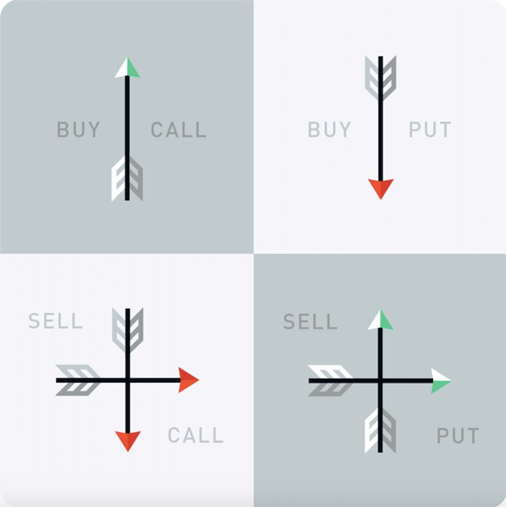
The owner has the right to exercise the contract or not, whereas the seller has the
obligation to make good on the contract if she’s assigned. When the owner of
the contract exercises it, the seller is assigned.
The closer an option is to expiring, the less time value the option will have. The
further away a contract is from its expiration date, the more potential there is for
price movement, which generally would make the contract trade at a higher
price.
The break-even point of an options contract is the point at which the contract
would be cost-neutral if the owner were to exercise it. It’s important to consider
the premium paid for the contract in addition to the strike price when calculating
the break-even point.
It’s important to also keep in mind that contracts are typically for 100-share
blocks. In the above example, you’d be entitled to buy 100 shares of MEOW at
the agreed-upon strike price. All contracts on Robinhood are for 100 shares.
Though options contracts typically represent 100 shares, the price of the option
is shown on a per-share basis, which is the industry standard.
Depending on your experience and other factors, you might be eligible for
different levels of options trading on Robinhood. With Level 2 approval, you’d
have access to the following strategies:
Buy Calls and Puts
Sell Covered Calls
Sell Cash Covered Puts
Exercise Options
With Level 3 approval, you’d have access to everything available with Level 2
approval and the following strategies:
Credit and debit spreads
Iron condors
Iron butterflies
Calendar spreads
You can find deeper dives on our Basics Options Strategies (Level
2) and Advanced Options Strategies (Level 3).
It’s helpful to note that Robinhood doesn’t allow selling uncovered options,
because there's no limit to the amount of money you could lose with some
strategies.
Disclosures
Options trading entails significant risk and is not appropriate for all investors.
Certain complex options strategies carry additional risk. Robinhood Financial
does not guarantee favorable investment outcomes and there is always the
potential of losing money when you invest in securities, or other financial
products. Investors should consider their investment objectives and risks carefully
before investing. To learn more about the risks associated with options, please
read the Characteristics and Risks of Standardized Options before you begin
trading options. Please also be aware of the risks listed in the following
documents: Day Trading Risk Disclosure Statement and FINRA Investor
Information. Examples contained in this article are for illustrative purposes only.
Supporting documentation for any claims, if applicable, will be furnished upon
request.
Reference No. 1392734
Robinhood empowers you to place your first options trade directly from your
app.
Placing an options trade (in app)
Tap the magnifying glass on your home page
Search the security you’d like to trade options for
Tap the name of the security you’re looking for
Tap Trade in the bottom right corner of the stock’s or ETF’s Detail page
Tap Trade Options
You can learn about different options trading strategies by checking out Basic
Options Strategies (Level 2) and Advanced Options Strategies (Level 3).
Things to consider when choosing an option
There are many things to consider when choosing an option:
What’s the price and percent change?
The value shown is the mark price (see below)
The +/- % change is today’s cost movement for the contract
KEEP IN MIND
“Chance of profit” is an estimate based on model assumptions and does not
guarantee future results. Numerous factors that are not reducible to a model
determine the actual chance of profit for a particular option contract or strategy.
Good-Til-Canceled versus Good-For-Day
orders
You can place Good-Til-Canceled (GTC) or Good-For-Day (GFD) orders on
options. A GTC order remains open for 90 days until you cancel it, or it’s filled. A
GFD order is automatically canceled at market close on the day it’s placed if it
doesn’t execute.
Natural price versus mark price
There are two different ways to display the price (and determine the theoretical
value) of an options contract: natural price and mark price.
As a reminder, the bid price is the highest price other traders in the market are
willing to pay for an asset at a moment in time, and the ask price (also known as
“offer”) is the lowest price traders are willing to accept for an asset at a moment
in time.
By default, we display the “natural price” when buying and selling options, but
you can change this by going to settings within options.
Note: Regardless of your default setting, mark price will still be used for a) multi-
leg orders, b) options rolling, and c) calculating “Current Price,” “Total Return,”
and other information regarding contracts you currently hold (e.g. your portfolio
return).
NOTE
If no buyers are currently available in the market, the mark price will display as
$0.01.
Levels
We’re required to evaluate whether various levels of options strategies are
appropriate for customers, based on information such as their trading
experience, investment objectives, and financial situation. Each brokerage has the
discretion to set the specific parameters for their customers. At Robinhood
Financial, if you’re given a Level 2 designation, you can execute the following
options trades:
Long Calls, Long Puts
Covered Calls
Cash-Covered Puts
If you’re given a Level 3 designation, you can execute all of the above trades,
along with the whole collection of limited risk spreads, including Iron Condors,
Iron Butterflies, and Credit Spreads.
Day trades
Just like stock or ETF trading, buying and selling (or selling and buying) the same
options contract on the same day will result in a day trade. It’s the same contract
if the ticker symbol, strike price, expiration date, and type (call or put) are all the
same.
KEEP IN MIND
Because of pattern day trade restrictions, you’re generally limited to no more
than 3 day trades in a 5 trading day period, unless you have at least $25,000 of
portfolio value (minus any cryptocurrency positions) in your Instant or Gold
account at the end of the previous day.
If you have a cash account, you are not subject to pattern day trading restrictions,
but you cannot access certain features, like Instant Deposits and trading with
unsettled funds.
A big, little primer on options
Democratize finance for all. Our writers’ work has appeared in The Wall Street
Journal, Forbes, the Chicago Tribune, Quartz, the San Francisco Chronicle, and
more.
A big, little primer on options
What’s an option, you ask?
Let’s start with the simple definition: a “stock option” is a contract to buy or sell a
particular stock at a specified price for a limited period of time.
Now, in human speak: think of an option like a mini version of the stock that it’s
attached to—it’s tradable and some of its value is tied directly to the stock itself.
And like stocks, options also trade in an auction style market—meaning they
have an “ask” (the price you can buy it) and a “bid” (the price you can sell it). Like
stocks, you can make or lose money on the options you trade as prices change.
But that’s where the similarities begin and end. Options have many nuances
which we’ll cover both here and in other articles. Not to mention, for any one
particular stock there could be thousands of different options. "Why," you ask?
Well, there are two kinds of options—“call” and “put” contracts. Calls (aka call
options) lock in a price to buy stock. Puts (aka put options) lock in a selling price.
Calls and puts move in opposite directions, kind of like traffic on a two-way
street. You can buy calls when you think the stock will go up, or buy puts when
you think it’ll go down.
Just like the milk in your fridge, options expire. Some expire in a day or a week,
while others expire in a month, many months, or even years. But, option
contracts don’t have to be held all the way to expiration. In fact, most options
traders close their position before it reaches its expiration date.
Look at these option chains of calls (left) and puts (right) of the hypothetical
company, Tiger, Inc. (Stock symbol MEOW).
It’s important to know that there are many “strike prices.” Since options are
contracts, “call strikes” lock in a buy-price of the stock and “put strikes” lock-in
the sell-price of a stock. There are many strikes above and below the price of the
underlying stock—the further away from the stock price, the more expensive or
cheaper the options get depending on whether they are “in the money” or “out
of the money.”
The “in, at, and out of money” options
Even though there are a ton of different strikes, you’ll hear traders referring to
three groups: “in the money” (ITM), “at the money” (ATM), and “out of the
money” (OTM) options.
For calls, it’s the options with strike prices that are lower than the stock
price.
For puts, it’s options with strike prices that are higher than the stock price.
At the money: options with a strike price that’s either right at (or very close to)
the stock price. This can include the nearest ITM and OTM options since the
stock is rarely exactly at the money.
For calls, it’s the options with strike prices that are higher than the stock
price.
For puts, it’s options with strike prices that are lower than the stock price.
There’s nothing inherently good or bad about any of these types. What’s
important to note is the difference in which their prices change as the stock
moves. The very deep ITM options (calls with very low strike prices, or puts with
very high strike prices) may change nearly dollar-for-dollar with the stock. The
super far OTM options (calls with very high strike prices, or puts with very low
strike prices) will move slowly (if even at all). The rest of the options will change
price on a continuum between the two extremes (think of a slope that is
gradually changing), with the ATM options changing price at about 50% of the
change in the stock price.
Even though option prices don’t change as quickly as the stock does in dollar
terms, the percentage change in an option’s price can be huge. But option prices
can also go to zero, whereas that’s tough to do with the stock of a major
company (although, it can happen, too).
Why consider buying calls?
Because you think the stock that it’s attached to (the “underlying” stock) is going
up. Period.
Here’s an example (stay with us—we’ll explain each piece). Let’s go back to our
theoretical company, Tiger, Inc. Its stock (ticker symbol MEOW) is trading at $128,
and you pay $2 to buy one MEOW January 29th 140 call option. January 29th, and 140 is the strike price. The $2 price you paid is called
the “premium” and it’s the price per share. Since each option controls 100 shares
of stock, your cost to buy this call is actually $200. Compare that to shelling out
$12,800 to actually buying 100 shares of MEOW.
Why would you buy a call option that gives you the right to lock in a buying price
that’s $12 higher than the current price $128? Because there’s a chance it could
get there before expiration. As an options trader, you don’t really care if it does
get there, but the price of the option reflects that probability. If there’s a chance
that the stock could be above the strike price at expiration, then the option will
have value. That probability increases when the stock goes up, which is what
drives the option price higher. And that’s how profits are made— you don’t need
the stock to reach the strike price in order to have a profitable trade, but it
certainly helps.
But here’s the rub: even if MEOW goes higher, it might not be enough to profit
because it took too long to get there. The key here? Time. Time is also a
factor and is the arch nemesis of long options traders because time erodes
options premiums. Let’s say that again: time erodes options premiums. If MEOW is
below $140 at expiration, the option goes poof— and it ain’t worth a penny. At
$142, you breakeven. But again, you do not need, nor likely want, to hold the
option that long, since the stock doesn’t need to reach the strike price in order
for you to profit.
On the other hand, assume that MEOW jumps to $150. A call option that has a
strike price that’s lower than the current stock price is said to be “in the money.”
A call with a 140 strike price is worth at least $10 ($1,000 per option). That’s an $8
profit on a $2 trade, which is a 400% return, and it might be smart to close the
trade in this situation.
But what if you still own this call and it expires in the money (remember, in the
money is when a call option has a strike price that’s lower than the current stock
price)? This is the only time you would be forced to exercise your call to capture
its value, and if you don’t want to be on the hook to buy $14,000 worth of stock
(for each call you own), you need to sell the option before it expires.
What about puts?
“Put options” work very much the same, except in the opposite direction. If you
think a stock is going down, you can buy “puts.” Whereas calls let you lock into a
buy price, buying a put option gives you the right to lock-in a selling price for the
stock. This means that put options usually increase in value when the stock
moves lower.
Buying puts is a less risky way to root for a stock’s tumble than shorting a stock
because you can only lose what you pay for the put, whereas the risk of loss
when shorting stocks is unlimited (remember, shorting stock isn’t actually
allowed on Robinhood).
Let’s go back to the example of MEOW, which is trading at $128. Suppose you
buy the February 19th 120 put for $3.00 because you think MEOW is moving
lower. You’ve got a maximum risk of the $300 you paid for the option. If MEOW
moves lower between now and expiration, the 120 put could increase in price,
and you could sell your put option for a profit. Or, worst case scenario, the
option loses all of its value and you’re out the $300.
The big three of options pricing
Despite what it may look like, there is a method behind the madness of option
pricing—it isn’t arbitrary. The good news is that all the heavy math has already
been done for you when you see a price quote. But since we’re here, let’s geek
out a little and break it down a bit.
The three biggest influences on option prices are:
There are others, such as interest rates, and dividends, but they don’t have as
much of a material impact. For now, let’s focus on the big three.
to as Intrinsic Value) is the amount that an option is in the money (remember, we
can also shorten this to ITM). If a call option is already $5 ITM, you’re not getting
that for free. That $5 will be baked into the option price and that ITM amount is
called the “real value” of the option. ATM and OTM options don’t have any real
value. All option prices have another component which is the “time value”—
composed of time itself and “implied volatility.”
Implied Volatility: a big part of expressing the cost of an option’s premium is in
the implied volatility (IV), which is an expression of how much the stock is
expected to move as a percentage. The more a stock is expected to move,
the greater the time value component is going to be. This is where “implied
volatility” comes in. An option with low IV will be cheaper than the same option
with high IV. In practical terms, it’s a way of expressing the “relative” cost of an
option.
The clock is always ticking
Looking at options across all expiration cycles, the lower priced options (relatively
speaking) are those that expire first. Just because something is lower in price
doesn’t necessarily make it better—they’re cheaper for a reason. Based on all the
other inputs of an options price, including volatility, time, and stock price, a
“cheap” OTM option has a low probability of ending up ITM by expiration. This is
in part because a stock’s move higher might not be fast or far enough to offset
something called “time decay,” or the cost of holding an option per day (in trader
geek-speak, this is called “theta”).
Time decay can happen slowly (in the case of longer-term options) or very
quickly (short-term options). Let’s take a look at this graph:
Notice that the time decay of a: 90-day option barely registers—the line looks
relatively flat and there’s little change. 60-day option picks up steam and starts to
have a material impact on the option premium. 30-day option that is headed into
expiration is often greater than the impact of the stock price moving higher.
Add to that a drop in IV (implied volatility), and a lower priced OTM option will
likely get crushed—a numbing frustration to option traders all over. To trade
short-term options, you have a much smaller window of time for the stock to
move higher, whereas, buying longer-term options, you have some breathing
room should the stock stall or take its sweet time moving higher.
When it comes to options, there’s a lot to unpack. Take your time and get to
know the ins and outs of calls and puts before you jump in. Once you understand
the basics, you can start to grasp and see the bigger picture. Once you’ve
mastered calls and puts, you can then begin to piece different options together
across price, strikes, time, and volatility to accomplish seemingly endless
possibilities to trade up, down, sideways, and dunno markets.
Next up: Let’s talk about volatility
Any hypothetical examples are provided for illustrative purposes only. Actual
results will vary.
Content is provided for informational purposes only, does not constitute tax or
investment advice, and is not a recommendation for any security or trading
strategy. All investments involve risk, including the possible loss of capital. Past
performance does not guarantee future results.
Options trading entails significant risk and is not appropriate for all customers.
Customers must read and understand the Characteristics and Risks of
Standardized Options before engaging in any options trading strategies. Options
transactions are often complex and may involve the potential of losing the entire
investment in a relatively short period of time. Certain complex options strategies
carry additional risk, including the potential for losses that may exceed the original
investment amount.
Robinhood Financial does not guarantee favorable investment outcomes. The past
performance of a security or financial product does not guarantee future results or
returns. Customers should consider their investment objectives and risks carefully
before investing in options. Because of the importance of tax considerations to all
options transactions, the customer considering options should consult their tax
advisor as to how taxes affect the outcome of each options strategy. Supporting
documentation for any claims, if applicable, will be furnished upon request.
Democratize finance for all. Our writers’ work has appeared in The Wall Street
Journal, Forbes, the Chicago Tribune, Quartz, the San Francisco Chronicle, and
more.
Single option strategies: the four horsemen
Stocks are a two-way street—up and down, that’s it. With the exception of a
stock that pays a dividend, there’s no other way to make (or lose) money.
But options? That’s a different story. Not only can you trade options on stocks
moving up and down, but sideways, too. You can even trade time and volatility
regardless of a stock’s direction, as long as it doesn’t really move.
But before you learn complex strategies that capitalize on Mercury in retrograde
(don’t worry, we’ll leave astrology out of this article), there are four basic option
strategies that serve as the primary tools in the option-trading toolbox. Many
refer to these as “single” option strategies, because they only require one option.
They are:
Long call
Long put
Covered call
Cash-secured puts
Long calls and puts are the most basic of all the options strategies, and perhaps
the easiest to execute because, well, they’re generally a lot cheaper than the
stocks they’re attached to (and simpler to understand). Like stocks, you buy a call
or put based on your opinion of the stock’s trend, and then sell them at some
point, hopefully for a profit. (Remember, buy low, sell high.)
Simple right? Well, there’s more to it. Not only do you have to be right on
direction, but you have to guess correctly on time and volatility, too—which
could work against you even if the stock behaves exactly as you want it to.
Another way to think about this is when you buy a stock, you only have to be
right about it’s direction (i.e., that it’s going up). But with options, the degree of
difficulty is a bit higher because you must correctly guess the:
direction of the stock
how far it will go
when it will get there
Before you jump into buying a call, remember that someone is going to take the
other side of your trade for all the opposite reasons you’re taking yours. Only
one of you will be right so in many ways, the difference here comes down to your
personal interpretation of information at hand. If you think that time and
volatility are working against you on a long option position, it stands to reason
that time and volatility are working in their favor because they sold it.
For many, single option buy strategies may be just fine, but are they right for
you? That’s for you to decide. But first, it’s worth learning as much as you can
about as many strategies as you can so that you recognize the role that options
could play in your trading (beyond just up and down).
So, let’s take a look under the hood of the two single-option buy strategies—
the long call and long put.
NAME: LONG CALL
The rate of time decay or a drop in volatility could exceed the benefit of any
stock price appreciation. This is why many options traders seek out long calls that
have low historical volatility and longer expirations.
Of course, the stock might not go high enough to be profitable at expiration, it
might stay where it’s at, or go down. In these cases, the long call will lose value.
You can either cut your losses and sell the option for less than you bought it
prior to expiration, or take the max theoretical loss and let the option expire
worthless. In this case, the option will automatically be removed from your
account after expiration.
If you want to exercise the long call and buy shares of the stock, that’s up to
you—it’s your right under the contract. This is typically only done if the long call
is in the money. At this point, you’re willing to take on the risk of owning 100
shares of the stock and have the money to buy the stock. In our example, the
August 100 call, you’d need $10,000 to buy 100 shares. This is why most options
traders simply close the position by selling the option back into the market. And
remember, at this point, the theoretical max loss (the cost of the call option) no
longer holds true. Once you own 100 shares of stock, your risk is the price you
paid for the stock all the way down to 0. In our example, that would be $100 + $3
(the cost of the call), for a total risk of $10,300.
KEEP AN EYE OUT FOR… Your call will “auto-exercise” without your say-so if it’s in
the money by just $0.01 or more, if you hold it to expiration, and you have the
available assets to exercise. When you exercise a call, you’re on the hook to
purchase 100 shares of the stock at the strike price. Some brokers will
automatically close your call option prior to expiration if you do not have the
money to buy the stock. It’s important to read and understand your specific
broker’s options agreement to know if that is the case. But DON’T depend on
this—always keep an eye on your positions, particularly the week of expiration. A
broker will simply look to get you out of the position, but not necessarily care
when, or at what price. It’s best that YOU manage your trade prior to expiration.
Nobody will care more about your position than you!
NAME: LONG PUT
The rate of time decay or a drop in volatility could exceed the benefit of any
stock depreciation. This is why traders generally seek out long puts that have low
historical volatility and longer expirations.
trader knows when to stay in a trade, but also when to get out. Sometimes, it can
be better not to be greedy and, “ring the register,” (meaning take profits).
Of course, the stock might not go down enough to be profitable at expiration,
stay where it’s at, or go up. In these cases, the long put will lose value. You can
either cut your losses and sell the option for less than you bought it prior to
expiration, or take the max theoretical loss and let the option expire worthless. In
this case, the option will automatically be removed from your account after
expiration.
If you want to exercise the long put and sell shares of the stock, that’s up to
you—it’s your right under the contract. This is typically only done when the long
put is in the money. At this point, you must either have 100 shares of the stock to
sell, or be trading in an account that allows you to short shares of stock
(Reminder: Robinhood Financial does not allow you to short stock). Don’t forget,
being short stock has unlimited risk to the upside, because a stock can
theoretically go up forever.
Selling time as a strategy
If you’ve been trading options for a while, you may have watched a stock move
in the right direction, but your long option lost money anyway. Why? Time. Or
more specifically, “time decay”—like a tax you pay daily when you’re holding an
option. The longer you hold it, the bigger this tax gets each day and accelerates
as you approach expiration.
All things being equal, no matter how much a stock moves, the option’s time
premium loses a little each day because of time decay, as the graph below
shows.
But what if you could flip the chart and with each passing day, time decay works
in your favor? In fact, you can.
Shorting options revisited
Before diving further into these strategies, let’s touch on what it means to “short”
an option. If you recall, shorting something means to sell it first, and buy it back
later, hopefully for less than you sold it for. It can be done with stocks (just, not at
Robinhood Financial) or options (yes, at Robinhood Financial, but with
restrictions). When it’s done with options, you may never have to “buy back” the
option because the aim is for the option to decay to zero on its own and expire
worthless.
You’ll recall, being “long” (owning) an option contract allows you to either buy
stock (if you exercise a call) or sell stock (by exercising a put) before expiration.
The other side of that trade could be someone who is selling you that call or put
short, which makes them obligated to sell the stock to you (if they’re short the
call) or buy the stock from you (if they’re short the put). The table below breaks it
down:
Selling single options
With certain “income” strategies, like the covered call and the cash-secured put
(aka cash-covered put), you could sell options first (typically OTM options), which
are “covered” by the stock you own (in a covered call) or the cash you set aside
(in a cash-secured put). In either strategy, you collect the option premium up
front, with the hope the stock doesn’t cross into the money on your strike.
Meanwhile you’re letting time and volatility decay your option to lower prices or
even zero at expiration.
There are four primary single-option selling strategies that most option traders
learn at some point—short call, short put, covered call, and cash-secured put.
The first two—the short call and put—are known as “naked” strategies because
you’re exposed without a hedge (protection in case something goes awry). Since
Robinhood Financial doesn’t allow naked option selling, we’ll focus on the
covered call and the cash-secured put (both of which happen to be bullish
strategies).
Both the covered call and cash-secured put allow you to sell (aka short) an
option up front and collect the premium, as long as you own the stock (for a
covered call), or have enough cash in your account (for a cash-secured put) to
buy the stock. The goal is for the option to decrease in value or expire worthless
on or before expiration, without much movement in the stock.
Since the risk profiles of these two strategies are essentially the same, whether
you own the stock or not typically serves as the basis for your decision of which
one to trade.
NAME: COVERED CALL
(On the Robinhood platform, this requires “legging” into the covered call by
buying 100 shares of stock first, then selling the short call. Remember, to sell a
covered call, your stock position must be in increments of 100 shares)
EXAMPLE: Buy +100 Shares at $50; Sell -1 August 55 Call for $2 (x100 = $200
credit received). Net cost = $5,000 - $200 = $4,800)
$48 per share, or $4,800)
In our example, if stock is bought at $50 and a 55 call is sold for $2, the trade can
profit a maximum of $7 (55 – 50 + $2 = $7 x 100 = $700)
Note: This also assumes that you are entering the stock and call at the same time.
Sometimes, traders sell covered calls on stocks they have owned for some time. In
this case, you could already have an unrealized profit or loss on your stock adding
to your potential gains by selling the call, but also locking in a loss on a stock
position. It’s important that you take into account the short call relative to the cost
basis of your stock when calculating the long-term profit or loss of a stock that you
have sold covered calls against.
THEORETICAL MAX LOSS: The price of the stock (stock could go to 0) minus the
short call premium (In our example, $50 - $2 = $48 x100 = $4,800)
You can also buy in order to close the short option anytime before expiration. If
you buy the call back at a lower price, you’ll have a realized gain on the short call.
If you buy it back for more than you sold it, you’ll have a realized loss on the
short call. Keep in mind that although you might lose money on the short call,
the unrealized gains on your long shares of stock may be larger than the losses
on the short call. The two could net together to create a net profit, which is why
the covered call is actually a bullish strategy. Keep in mind however, you only
realize gains on your stock when you decide to sell your shares.
If the stock shoots up in price, past your short call, you will be at max gain for the
entire covered call. In this scenario, you can also let your stock get called away
from you at the strike price. This would close your stock position and realize any
gains or losses on the underlying stock. Don’t forget, you don’t participate in any
stock gains above the strike price of your short call.
includes short calls that are a part of a covered call. When this happens, your
shares may be called away from you prematurely, taking you out of the position,
and thus missing out on the dividend you would have received if you were
simply long shares of the stock.
NAME: CASH-SECURED PUT (aka cash-covered put)
100 X $50 = $5,000 - $200 = $4,800 cost (what your broker withholds in your
account)
$4,800)
= $200)
If the stock goes in the money on the short put, you could be assigned and the
cash you put up to sell the option would then be used to buy the stock. Not a
big deal if you wanted to own the stock anyway, but if you don’t want to own a
pile of stock in your account, be sure to exit your position before expiration!
You can also buy back the short put before expiration. If the stock rises, the short
put will lose value and you can attempt to buy it back for a profit (sell high/buy
low).
If the stock drops, the short put will gain value and if you want to avoid owning
shares of stock, you can buy the put back at a more expensive price, realizing a
loss.
Remember, many traders use the selling of puts as a way to get long the stock.
Read that again. Many traders use cash-secured puts hoping to keep the
premium, but also if they get put the stock, they don’t mind it, because it is a way
to potentially buy shares at a lower price than what the stock was trading at
when they sold the put.
This means that although your short put will have an unrealized profit, you’ll be
risking the chance that the stock turns around, in exchange for squeezing out the
last few pennies of premium in the short put. To avoid this, some traders look to
“roll” their short puts up, which is trader-speak for buying back the profitable
short put (at less than max profit) and establishing a new short put at a higher
price.
Congratulations. You’ve made it through the first four options strategies. It’s a lot
of information to take in, so take your time and go back to make sure you
understand these strategies before considering them in your account. Options
take time and practice to learn and grasp. Pat yourself on the back, you’re well
along the educational journey now!
Next Up: Spreads: the building blocks of Options trading
Content is provided for informational purposes only, does not constitute tax or
investment advice, and is not a recommendation for any security or trading
strategy. All investments involve risk, including the possible loss of capital. Past
performance does not guarantee future results.
Options trading entails significant risk and is not appropriate for all customers.
Customers must read and understand the Characteristics and Risks of
Standardized Options before engaging in any options trading strategies. Options
transactions are often complex and may involve the potential of losing the entire
investment in a relatively short period of time. Certain complex options strategies
carry additional risk, including the potential for losses that may exceed the original
investment amount.
Robinhood Financial does not guarantee favorable investment outcomes. The past
performance of a security or financial product does not guarantee future results or
returns. Customers should consider their investment objectives and risks carefully
before investing in options. Because of the importance of tax considerations to all
options transactions, the customer considering options should consult their tax
advisor as to how taxes affect the outcome of each options strategy. Supporting
documentation for any claims, if applicable, will be furnished upon request.
What are Options Greeks?
Democratize finance for all. Our writers’ work has appeared in The Wall Street
Journal, Forbes, the Chicago Tribune, Quartz, the San Francisco Chronicle, and
more.
DEFINITION:
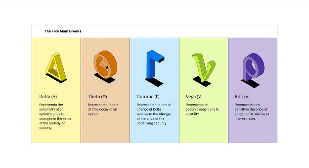
🤔 Understanding Options Greeks
The Greeks represent the different dimensions of risk that go into options
trading. These dimensions are referred to collectively as “the Greeks.” The Greeks
include variables represented by the Greek letters Delta, Gamma, Theta, Vega,
and Rho. There are also “minor Greeks,” which are not used as often to measure
risk factors. The Greeks are essential tools in risk management that can help
options-traders make informed decisions about what and when to trade. They
help to look at how different factors such as price changes, interest rate changes,
volatility, and time affect the price of an option contract.
EXAMPLE
Let’s consider the Greek Delta, which is used to estimate how much we can
expect an option price to increase or decrease based on a change of $1 for the
underlying security. Delta can be positive or negative, depending on whether the
option is a call option or a put option. An investor might use Delta to help
determine how much the option would be worth if the
underlying stock increased or decreased in price by a certain amount.
Takeaway
The Greeks are like chemicals in a science experiment…
In a science lab, you might experiment by adding different chemicals to your
mixture to see how they impact the outcome. In options trading, you might add
different variables into the mix to see how they might affect the final result (in
this case, the premium of an option).
Did this answer your question?
406 of 557 people said that this answered their question.
👍 Yup!👎 No
Ready to start investing?
Sign up for Robinhood and get stock on us.
Sign up for Robinhood
Certain limitations apply
New customers need to sign up, get approved, and link their bank account. The
cash value of the stock rewards may not be withdrawn for 30 days after the
reward is claimed. Stock rewards not claimed within 60 days may expire. See full
terms and conditions at rbnhd.co/freestock. Securities trading is offered through
Robinhood Financial LLC.
Tell me more…
What are the Greeks?
Delta
Gamma
Theta
Vega
Rho
What are the Minor Greeks?
How do Greeks help you understand options?
What are the Greeks?
The Greeks are measurements of an option’s sensitivity to certain variable factors
in the marketplace, such as price changes, interest rate changes, and the passage
of time. The Greeks help determine how options may react to a given change in
some of these factors.
There are five primary Greeks (and a handful of minor Greeks). These are the five
primary Greeks:
Delta (Δ) represents the sensitivity of an option’s price to changes in the value of
the underlying security. In other words, how much does the price of the option
go up or down as the price of the security goes up and down? Delta measures
how much the price of the option will change as a result of a $1 change in the
price of the asset. The Delta of an option varies over the life of that option,
depending on the underlying stock price and the amount of time left until
expiration.
Delta usually appears as a decimal number. Put options have a negative
relationship with Delta due to a negative relationship with the underlying
security. Premiums are expected to go down as the price of the security goes up.
Therefore, the Delta will range from zero to negative one for put options.
Call options, on the other hand, have a positive relationship with Delta due to a
positive relationship with the underlying security. Premiums are expected to go
up as the price of the security goes up. Therefore, the Delta will range from zero
to one for call options. For example, if a call option has a Delta of .50, we know
that the price of the option changes by an average of 50 cents when the price of
the security changes by $1.
Delta also represents an approximation of the probability that an option will be
in-the-money (aka worth money) at the time it expires. An option with a Delta of
.50 is at the money, meaning it’s neutral. Anything lower probably won’t be in-
the-money, while anything higher probably will be in-the-money. Keep in mind
this is an approximation and does not guarantee that these results will hold true.
Gamma (Γ) represents the rate of change of Delta relative to the change of the
price of the underlying security. It measures how much Delta changes if the value
of the security increases or decreases by $1. Investors use Gamma to help
forecast changes in an option’s Delta and determine how stable Delta is. Gamma
will be a number anywhere from 0 to 1.00.
As an example, let’s go back to our example of the Delta of .50. Let’s say that the
option’s Gamma is .10. So if the price of the security goes up or down by $1, then
the Delta would probably go up or down by .10, all else being equal.
Gamma is a helpful tool because the Delta value of an option can change over
time. So if you look at two securities with the same Delta, you don’t necessarily
know which is more likely to stay at the same Delta. Gamma helps to determine
how stable Delta is.
Gamma is higher for options that are at-the-money and closer to expiration. The
higher Gamma is, the more unstable Delta is as the price of the underlying stock
changes. Let’s look again at our example of the option with the Delta of .50.
We’ve already said the Gamma is .10. That’s pretty stable, and it’s unlikely Delta
will change drastically. But if that same option had a Gamma of .90, it would be
pretty likely that Delta would change dramatically as the price of the underlying
stock changes.
Theta (Θ) represents the rate of time decay of an option. Specifically, it describes
how much the value of an option changes each day as expiration nears. An
example of this is that an option with a Theta of -.50 would decrease by an
average of 50 cents every day, all else being equal.
Options tend to lose value as the expiration date nears, so Theta is usually a
negative number. As the expiration date nears, Theta is likely to increase because
the time left to earn a profit from the option decreases.
Time decay is good for the seller of an option because as time passes, the
chances increase of the option expiring with no action taken. Likewise, it’s bad for
the buyer of an option because as time passes, the chances decrease of them
making money from their option.
Vega (v) represents an option’s sensitivity to volatility. It measures the rate of
change of an option’s value relative to the security’s volatility. More specifically, it
measures how much the price of an option changes based on a 1% change in
the volatility of the underlying security. A decrease in Vega usually represents a
decrease in the value of both put options and call options. An increase in Vega
usually represents an increase in the value of both put options and call options.
Vega is an essential measurement because volatility is one of the more important
factors affecting option values. So all else being equal, it makes sense to
purchase an option that is less sensitive to volatility, or with a higher Vega.
Rho (p) represents how sensitive the price of an option is relative to interest
rates. It measures the rate of change in an option’s value based on a 1% change
in the interest rate (based on the risk-free interest rate, or the rate of
U.S. Treasury bills). For example, if an option has a Rho of .50, then the value of
the option would increase or decrease by an average of 50 cents when the
interest rate increases or decreases by 1%. Rho is the least significant of the
factors we’ve discussed since the interest rate does not affect the value of an
option as much as other determinants. However, it should be considered if
current interest rates are expected to change.
What are the Minor Greeks?
Delta, Gamma, Theta, Vega, and Rho are the Greeks most often discussed in
terms of options-trading, but they aren’t the only ones. There are a handful of
Greeks that investors don't use as often — we’ll refer to these as the minor
greeks.
The minor Greeks include:
Lambda measures how sensitive the price of a stock is to a 1% change in
implied volatility.
Epsilon measures how sensitive the value of an option is to a change in
the dividend yield of the underlying stock.
Vomma measures how sensitive Vega is to changes in volatility.
Vera measures how sensitive Rho is to volatility.
Speed measures how sensitive Gamma is to changes in the price in the
underlying stock.
Zomma measures how sensitive Gamma is to changes in volatility.
Color measures how sensitive Gamma is to the passage of time.
Ultima measures how sensitive Vomma is to changes in volatility.
How do Greeks help you understand
options?
The Greeks are a valuable tool for options traders to help them evaluate the risk
of different options. Investors use them both to make new investment decisions
and to analyze the risk of their current portfolio. Ultimately, the Greeks provide
information that allows investors to make informed decisions.
The price of an option is often determined by a pricing model, such as the Black-
Scholes Model. This model takes into account different factors, such as volatility,
to price options. However, the Black-Scholes Model is a European model and
operates based on the assumption that the option will not be exercised before
the expiration date.
It’s important to remember that the Greeks are based on mathematical formulas.
Given these complicated formulas used to determine the Greeks and the
importance of accurate results, they are most often calculated using a
computerized solution. You can also usually get the values from a broker or
brokerage firm since they are set up to run those formulas. While the Greeks can
be used to assess possible future prices, there’s no guarantee that they’ll hold
true.
Ultimately, the Greeks are there to help take some of the guesswork out of
options-trading. It can be a complicated realm of investing for those who don’t
have experience with options. It is important to know that the Greeks do not
work in isolation and are constantly changing — A change in one Greek can
affect all of the other Greeks. The Greeks are one tool that can be used to help
you determine the risk you’re getting yourself into before you make significant
investing decisions.
Keep in mind options trading entails significant risk and is not appropriate for all
investors. Certain complex options strategies carry additional risk. To learn more
about the risks associated with options trading, please review the options disclosure
document entitled Characteristics and Risks of Standardized Options,
available here or through https://www.theocc.com. Investors should consider their
investment objectives and risks carefully before trading options. Supporting
documentation for any claims, if applicable, will be furnished upon request.
Was this article helpful?
406 of 557 people said that this answered their question.
👍 Yup!👎 No
Ready to start investing?
Sign up for Robinhood and get stock on us.
Sign up for Robinhood
Certain limitations apply
New customers need to sign up, get approved, and link their bank account. The
cash value of the stock rewards may not be withdrawn for 30 days after the
reward is claimed. Stock rewards not claimed within 60 days may expire. See full
terms and conditions at rbnhd.co/freestock. Securities trading is offered through
Robinhood Financial LLC.
20200224-1096140-3300082
Related Articles
What is an Option?
Updated January 06, 2021
What is a Security?
Updated August 24, 2021
What is a Bond?
Updated June 17, 2022
What is a Broker?
Updated March 19, 2021
What is the Stock Market?
Updated March 19, 2021
What are Bull and Bear Markets?
Updated March 19, 2021
You May Also Like
What is Margin?
Updated December 07, 2020
Buying on margin means borrowing money from your broker to purchase
securities.
What is a Candlestick?
Updated October 13, 2020
In stock trading, a candlestick is a charting tool that quickly conveys a stock’s
opening, closing, high, and low price for the day.
What is Business Process Outsourcing (BPO)?
Updated February 08, 2021
What is Money Supply?
Updated February 10, 2021
The money supply is the total amount of currency, such as coins and bills, and
other liquid money that exists within an economy.
What is Securitization?
Updated October 16, 2020
What is Disability Insurance?
Updated October 16, 2020
Follow us on
Invest
Crypto
Cash Card
Learn
Snacks
About us
Blog
Affiliates
Press
Careers
Commitments
Our Customers
Investor Relations
Support
ESG
Podcast
Terms & Conditions
Disclosures
Privacy
This information is educational, and is not an offer to sell or a solicitation of an offer to buy
any security. This information is not a recommendation to buy, hold, or sell an investment or
financial product, or take any action. This information is neither individualized nor a research
report, and must not serve as the basis for any investment decision. All investments involve
risk, including the possible loss of capital. Past performance does not guarantee future results
or returns. Before making decisions with legal, tax, or accounting effects, you should consult
appropriate professionals. Information is from sources deemed reliable on the date of
publication, but Robinhood does not guarantee its accuracy.
Robinhood Financial LLC (member SIPC), is a registered broker dealer. Robinhood Securities,
LLC (member SIPC), provides brokerage clearing services. Robinhood Crypto, LLC provides
crypto currency trading. All are subsidiaries of Robinhood Markets, Inc. (‘Robinhood’).
1771482
y buy shares at a lower price than what the stock was trading at when they sold
the put.
This means that although your short put will have an unrealized profit, you’ll be
risking the chance that the stock turns around, in exchange for squeezing out the
last few pennies of premium in the short put. To avoid this, some traders look to
“roll” their short puts up, which is trader-speak for buying back the profitable
short put (at less than max profit) and establishing a new short put at a higher
price.
Congratulations. You’ve made it through the first four options strategies. It’s a lot
of information to take in, so take your time and go back to make sure you
understand these strategies before considering them in your account. Options
take time and practice to learn and grasp. Pat yourself on the back, you’re well
along the educational journey now!
Next Up: Spreads: the building blocks of Options trading
Content is provided for informational purposes only, does not constitute tax or
investment advice, and is not a recommendation for any security or trading
strategy. All investments involve risk, including the possible loss of capital. Past
performance does not guarantee future results.
Options trading entails significant risk and is not appropriate for all customers.
Customers must read and understand the Characteristics and Risks of
Standardized Options before engaging in any options trading strategies. Options
transactions are often complex and may involve the potential of losing the entire
investment in a relatively short period of time. Certain complex options strategies
carry additional risk, including the potential for losses that may exceed the original
investment amount.
Robinhood Financial does not guarantee favorable investment outcomes. The past
performance of a security or financial product does not guarantee future results or
returns. Customers should consider their investment objectives and risks carefully
before investing in options. Because of the importance of tax considerations to all
options transactions, the customer considering options should consult their tax
advisor as to how taxes affect the outcome of each options strategy. Supporting
documentation for any claims, if applicable, will be furnished upon request.
Is this article helpful?
235 of 265 people said that this answered their question.
👍 Yup!👎 No
Ready to start investing?
Sign up for Robinhood and get stock on us.
Sign up for Robinhood
Certain limitations apply
New customers need to sign up, get approved, and link their bank account. The
cash value of the stock rewards may not be withdrawn for 30 days after the
reward is claimed. Stock rewards not claimed within 60 days may expire. See full
terms and conditions at rbnhd.co/freestock. Securities trading is offered through
Robinhood Financial LLC.
20210115-1481758-4465002
Navigating exercise &
assignment
Democratize finance for all. Our writers’ work has appeared in The Wall Street
Journal, Forbes, the Chicago Tribune, Quartz, the San Francisco Chronicle, and
more.
Exercise & assignment: a cautionary tale
You shake your Magic 8 ball and the screen reads, “Just because you can, doesn’t
Sage advice, especially when it comes to exercising your options. If you buy calls
or puts and decide to do what the option gives you the right to do—buy stock
for call options or sell stock for put options—it sets off a process called “exercise
and assignment.” Normally, this isn’t the road most traders go down. Rather,
most traders open options positions with the intent to close them later for a
profit—un-exercised. Let’s break things down and take a closer look at the
mechanics of exercise and assignment.
The mechanics of exercise & assignment
When you exercise a long call, you convert your call into stock. You’ll actually get
100 shares of the stock for every call you exercise…along with a bill for the cost
of the stock, dictated by the strike of the call you’re exercising. For example, if
you exercised a call with a strike price of $50, you would buy 100 shares of the
underlying stock at $50 per share, for a total cost of $5,000.
Now, your exercise is someone else’s assignment. A randomly selected person
who is short that call option receives a notice that they’ve been “assigned” and
are required to sell 100 shares of stock for every option they’re assigned.
If we’re talking about put options, when you exercise your put, you’re selling
(“putting,” actually) the stock to someone (also nameless) who is short a put on
the other side of the trade. They have to buy it.
This great power to exercise is always in the control of the option owner, except
at expiration. At that point, options that are in the money, even by just one cent,
will be exercised automatically (this is common, but always check with your
broker regarding automatic exercise policies).
The good, the bad, the ugly (of exercising)…
First, here are a few scenarios where exercising might be a good idea.
You were assigned on the short leg of a spread. (More on this below.)
You really, really want to buy or sell the stock, and you can afford to.
The option you own is illiquid and the bid/ask spread (the difference
between the bid and the ask) is very wide. If you stand to lose more selling
the option than simply exercising, it makes sense to go ahead and exercise.
You don’t want to sell an option for less than its real value (the value
that’s in the money).
Sometimes it is worth exercising your long call to collect a dividend.
Remember, options owners do not take part in collecting dividends, only
stockholders.
Then, here’s why you may not want to exercise.
Long options are cheaper than long or short stock.
Long options are lower risk in that only the premium spent is the
maximum you can lose when compared to being long or short stock. Even
if you can afford the stock position, make sure you want to take on that
type of risk.
You’re simply giving away your money if your option has any time value.
Rather than exercise, if you sell your option in order to close, you not only
keep that time value, but you can also mitigate the loss due to an early
assignment (in the case of a long option that was previously a part of a
spread).
You’re giving away even more money if you exercise an out of the money
option. If an option is OTM and you don’t want it anymore, you try to sell
it. If there is no value to it, you may want to just let it expire worthless. Who
knows, the stock could make a comeback before expiration.
Where new options traders can get in a lot of trouble is misunderstanding
assignments—particularly when they’re trading spreads, which contain both a
long and a short option. Whereas exercising is something you control in a long
position, assignment is something that can happen to you at any time while
you’re in a short position.
If your short put option goes in the money and you’re assigned, the cash balance
in your account might show a large loss equal to the size of the assigned
position. If your short call option gets assigned, you might see a short stock
position resulting from selling shares you didn’t already own. But fear not! That’s
where your long option comes to the rescue.
As soon as you exercise the long option from the spread, you’ll immediately
offset the loss, minus the maximum loss of the spread (which is usually the
distance between the short and long strikes of the options).
Closing time, time for you to go out…
If you’re speculating with options, exercising is rarely the optimal choice to close
your position. However, it’s worth knowing when you should or shouldn’t and
what to do when faced with the decision.
If you have a short, deep-in-the-money option and are at risk of being assigned,
it’s usually best to close the position and move on prior to expiration.
Assignment doesn’t happen all the time, but it’s the reason you never want to
“set and forget” about your options trades, particularly spreads with short
options. When your short options go in the money, the longer you remain in the
position, the greater the chance you have of being assigned.
If you need to exercise your long options:
Open Robinhood, and go to your positions screen by tapping the chart
icon in the lower left
Tap “Exercise,” and follow the instructions
Next up: Risk management
*Content is provided for informational purposes only, does not constitute tax or
investment advice, and is not a recommendation for any security or trading
strategy. All investments involve risk, including the possible loss of capital. Past
performance does not guarantee future results. *
Options trading entails significant risk and is not appropriate for all customers.
Customers must read and understand the Characteristics and Risks of
Standardized Options before engaging in any options trading strategies. Options
transactions are often complex and may involve the potential of losing the entire
investment in a relatively short period of time. Certain complex options strategies
carry additional risk, including the potential for losses that may exceed the original
investment amount.
Robinhood Financial does not guarantee favorable investment outcomes. The past
performance of a security or financial product does not guarantee future results or
returns. Customers should consider their investment objectives and risks carefully
before investing in options. Because of the importance of tax considerations to all
options transactions, the customer considering options should consult their tax
advisor as to how taxes affect the outcome of each options strategy. Supporting
documentation for any claims, if applicable, will be furnished upon request.
Democratize finance for all. Our writers’ work has appeared in The Wall Street
Journal, Forbes, the Chicago Tribune, Quartz, the San Francisco Chronicle, and
more.
Risk, it’s not just a board game
There’s something about the deceptively low price of some options that can lure
some new traders into buying too many at once. After all, the math is so simple.
If you have just $2,000 and a call option costs $2, you can afford to buy 10 calls,
right? Whoa, pump the breaks.
Technically, yes, you can afford the transaction, but if the extent of your trading
plan is shooting from the hip—your trading days are likely numbered.
When you’re in a position, there are too many things outside of your control to
keep track of, so let’s focus on the things you can better control. One of them is
risk management. You have the most control over your risk the
moment before you place the trade.
Plan your trade, trade your plan
Think of your trading account like a business, and your role is the Chief Risk
Officer. Now, let’s activate our spidey senses and come up with a plan to help
protect our capital (that’s CFO speak for cash).
The amount of information out there about risk management and trade planning
could fill volumes of books (trust us, we’ve read them). But it boils down to
asking yourself a few critical questions:
What will I trade?
What strategy will I use?
How much capital should I risk?
When do I get in?
What do I do when things go wrong?
What do I do when things go right?
When do I get out?
Get in the habit of jotting all this down in a trading journal (thank you, Evernote)
before every trade, and update the journal with your results. Then, rinse and
repeat. We’ve covered some of these bullet points in other articles (Trading calls
& puts, Spreads), so let’s focus on two: what to trade, and how much capital
should you risk?
Underlying matters
One of the single most important decisions when trading options is selecting an
underlying (stock, etf, etc.) to trade. It’s usually the first pitfall new traders come
across in their trade selection process. Now, we can’t tell you what stock or
underlying to trade (it’s against the rules), but we can share some information to
help you find one that’s appropriate for you. While we can spend an entire article
on this (and we will), here are some crucial things to consider:
water. Liquidity is the ease with which you can get in and out of a position. This
can usually be spotted when an underlying stock or ETF has a tight “bid/ask
spread,” and at least a million or more shares traded per day (unlike say some
“penny” stock you heard about on an online forum—spidey senses activated).
What does an illiquid option’s price look like? .50 bid x 4.25 ask; 1.00 bid x .5.25;
.05 bid x 5.00. If an option is 0 bid (zero bid), this means at the moment there are
no willing buyers for this option. So if you see 0.00 bid x 5.00 and you pay 5.00 or
less for that option, you will have no one to turn around and sell it to. You can
get into the position, but you can’t get out unless someone places a bid to buy
the contract. Illiquid options are like the Hotel California: You can check out
anytime you like, but you may never leave. (Did I just date myself?)
introduce unnecessary risk into your portfolio (now pat yourself on the back and
repeat these mantras daily).
“How much should I risk?” for $200, Alex
When you’re ready to place a trade, this is the million dollar question. Because, in
trading, your capital is everything. In fact, it’s the only thing that matters at the
end of the day. If you don’t have capital, you can’t trade.
For the most part, your goal isn’t to win. Your goal is to lose less than you win.
Another way traders phrase this is, “it’s not about how much you make, it’s about
how much you don’t lose.” Losses are inevitable, so controlling how much you
could lose before you enter into a trade could be the single most important
decision you make before each trade.
Determining how much capital you put into each trade is called “position sizing.”
And the first thing to think about is how much of your capital you’re willing to
lose. What if you lose five trades in a row? What if you’re completely voodoo-
hexed and you lose 10 trades in a row? No matter what happens, preserving your
capital to make it to another trade is your first goal.
So how much is just right? That’s up to you. But, for starters, putting all of your
capital into one trade on something like long calls may not be a viable, long-term
strategy. You might get lucky and make money at first, but if that’s your trade
management strategy, eventually what the market giveth, the market will taketh.
Take it from veteran traders, you’re only as good as your last trade.
Trust the math (and your gut)
Position sizing comes down to a couple of things—how much you have, how
much you’re willing to lose, and some math. None of these are arbitrary, but they
don’t take rocket science to figure out, either.
You should already know what you have, so how much you’re willing to lose is
more of a gut check.
Is risking 100% of your account on one trade a bad idea? Probably. But what
about 10%? How about 5%, or 2%? Check your pulse as the numbers go down
and imagine losing that amount. Let that sink in, it’s important. If you lost a
certain percentage of your account on one trade, is that a loss you can absorb?
If 10% is too hot, and 2% feels too cold, but 5% feels just right, lock it in your
plan and promise Goldilocks you’ll never break your “5% rule” again. (Not a
recommendation here, simply for illustrative and educational purposes. It is up to
you to gauge and consider. Actual values will vary.)
From there, the math with options is simple.
Sizing up a long option trade: If you’re trading a buy strategy like long calls
and long puts or debit spreads, it’s the cost of the trade divided into your total
risk per trade.
For example, if Savvy Savannah has $10,000 in trading capital and applies the 5%
rule, that’s $500 in max risk per trade. If the price of an option is $2.50, ($250
total per option), Savannah could buy 2 of those options. If a debit spread also
costs $2.50, the formula is the same and Savannah could buy 2 spreads. (Note: It
doesn’t have to be all at once. Savannah can scale into positions through
multiple purchases or sales of a contract or spread).
Since you can’t go over $500 risk, you can only trade one spread.
Cool. I’m a position sizing Jedi now. What can go wrong?
Well, a lot, Padawan. It’s worth mentioning that someone reading this (you might
be one of them) might be thinking, “5%? No problem. I’ll just cut up my account
into 20 trades at 5% each.” It doesn’t work like that.
As a general practice, you don’t necessarily want to use all of your capital just
because it’s there. Consider starting with one at a time, at least while you’re
learning and work your way up to a level that’s comfortable. The 5% rule isn’t
about 5% dispersed across 20 trades, it’s 5% of what’s left in your account after
you close this one. This means if the account goes down in value, your trade size
also goes down. If your account increases, your trade size could go up. For many
people, it can be good to continually reassess if 5% of a larger portfolio still fits
your risk appetite.
Think of it this way: if Savannah spent 5% of $10,000 on 20 trades and all of them
went to zero, she would be left with zero (assuming she's not trading on margin,
she'd probably hit zero quicker). However, if Savannah placed 20 trades, one
trade at time, and spent 5% on the remaining capital, she could lose 100% of 20
trades in a row and still have $3,774 left in her trading account.
That’s an example of how proper trade management can work—lowering your
risk per trade if your account falls, while reducing your overall risk so you don’t
blow up your entire account (trader speak for going broke). Position sizing is just
one way to control some of the risk that exists between your ears.
Delta, delta, delta
One last thing. Just because you’ve allocated a smaller loss per trade, doesn’t
mean your work is done. There’s still strike selection, and more importantly, what
strikes to consider avoiding. Just as risking all of your capital on one trade is a
recipe for disaster, buying a bunch of cheap, out of the money calls for $0.10
each can be just as bad. One way to gauge your odds of potential risk is to look
at the option’s Delta.
Delta is one of those fancy “options greeks” you might have heard about
somewhere. We’ll spend some time in other articles discussing greeks, but delta
is worth highlighting here. Delta is like a swiss army knife for analyzing risk. Let’s
quickly break it down:
Delta is the option’s price sensitivity to price changes in the underlying
stock. If a call has a .10, or “10 delta” and the stock moves up $1.00, the
option will only increase .10 cents in value. Not so great if you thought the
option was going to move in lockstep with the stock.
Another way traders use delta is as a back of the napkin calculation for
probability of the option expiring in the money at expiration. Our example
call with a .10 delta has roughly a 10% chance of expiring in the money.
Another way of thinking about this is the seller has about a 90% chance of
keeping the credit you paid them. Think about that.
And finally traders use delta to calculate the equivalent “shares” that the
option is acting like. So, even though you may be buying a 10 delta option,
a lot of small deltas add up to big deltas, and before you know it, you’re
long thousands of deltas. That would be the equivalent of owning
thousands of shares of stock (spidey senses activated, call the Risk Officer!).
Bottom line, deep, out of the money options are cheaper for a reason. They have
a very low probability of success. In fact, many veteran traders call them “lottery
tickets” because they are cheap, and rarely pay off. Of course when they do,
you’re sure to hear about it, but trust us, it’s the exception that proves the rule.
You can find delta on Robinhood by following the steps below:
Tap the Search icon at the bottom of your app
Search for a stock symbol
In the Stock Information Page, tap Trade, then Trade Options
Select the expiration at the top of the screen
Select the option from the chain you want to trade
Under “Limit Price,” select the bid/ask and you’ll see this:
The delta in this image is 0.3956, but that can be read as “39 deltas”—the
equivalent of 39, almost 40 shares of stock. The option has roughly a 39% chance
of expiring in the money by expiration.
At the money options hover right around 50 deltas, which means they’re
expected to move $0.50 for every $1 move in the stock. So, if you’d like to
emulate a similar profit/loss profile of 100 shares of stock, you could buy two at
the money options. When the stock moves up $1, the two contracts that are at
the money are expected to move up $1 as well. The reverse is true if the stock
moves lower by $1.
The why of delta is for another article, but the important point to understand is
that it’s not linear. Delta changes, like the slope of a curve, and cheap out of the
money options have an extremely low delta. There’s a sweet spot between the at
the money and cheaper out of the money options that may offer a balance of
cost and a higher probability of success.
Also, keep in mind, whenever you buy an option (no matter whether it is ITM,
ATM, OTM), your theoretical probability of success is less than 50/50. It’s just how
the math works out. And remember, the higher the delta, the greater the
probability that the option could be in the money at expiration. For now, let that
be your guide.
And that’s a wrap
Remember, you are the Chief Risk Officer of your trading account! Risk
management starts with you and the decisions you make before you place a
trade. Manage your capital and manage your risk, accordingly. The single most
important tip we’ve learned from veteran traders over the years is to ask yourself,
always, “what is my risk?” Once you take some time to assess and reflect on your
risk management approach, Tom Cruise won't be the only one dancing.
Any hypothetical examples are provided for illustrative purposes only. Actual
results will vary.
Content is provided for informational purposes only, does not constitute tax or
investment advice, and is not a recommendation for any security or trading
strategy. All investments involve risk, including the possible loss of capital. Past
performance does not guarantee future results.
Options trading entails significant risk and is not appropriate for all customers.
Customers must read and understand the Characteristics and Risks of
Standardized Options before engaging in any options trading strategies. Options
transactions are often complex and may involve the potential of losing the entire
investment in a relatively short period of time. Certain complex options strategies
carry additional risk, including the potential for losses that may exceed the original
investment amount.
Robinhood Financial does not guarantee favorable investment outcomes. The past
performance of a security or financial product does not guarantee future results or
returns. Customers should consider their investment objectives and risks carefully
before investing in options. Because of the importance of tax considerations to all
options transactions, the customer considering options should consult their tax
advisor as to how taxes affect the outcome of each options strategy. Supporting
documentation for any claims, if applicable, will be furnished upon request.
What is a Profit & Loss chart?
The P/L (Profit & Loss) chart helps you visualize an option strategy’s theoretical
profits or losses at expiration. This is a great way to gain some insight into any
particular options strategy before you enter into a position.
How does it work?
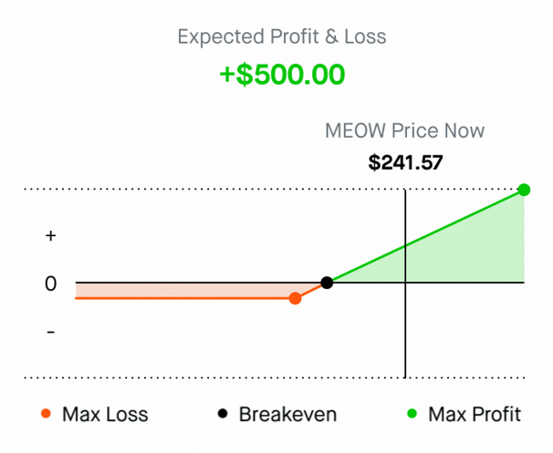
The vertical Y-axis represents the theoretical profit (+) and loss (-) range.
Anything above zero represents theoretical profit while the area below
represents theoretical loss. Both values assume the option is held until expiration.
The horizontal X-axis represents the stock price at expiration. When it comes to
a calendar spread, which contains both long and short options at identical strike
prices across two different expiration dates, the expiration of the front month
option is the assumed expiration date.
How can it help me make informed decisions
for my options trading?
The chart can help you gauge the theoretical risk and reward of any given
options strategy. This is one of the most important keys to choosing a strategy
because you’ll get an idea of how much money you can potentially make or lose.
This assumes all options are held until expiration and not closed, exercised, or
assigned before then.
Keeping track of your breakeven is another important factor. Assuming you hold
the position to expiration, this is the price the underlying stock must be above or
below in order to potentially make money at expiration. Helpfully, this includeswhen the position was established.
Example: Let’s revisit the above MEOW 237 call
The MEOW 237 call has a premium of $2.00. The theoretical max profit would be
unlimited because there’s no upper limit on how much the stock can potentially
gain. You also know that you need the price to hit $239 to break even at
expiration. The breakeven price for a long call is the strike price (237) plus the
premium paid ($2). The theoretical max you can lose (max loss) is going to be
$200, which is the premium paid ($2 x the contract multiplier of 100).
Keep in mind, this graph is only showing potential profit and loss at expiration.
Actual gains may vary prior to expiration. For more helpful options education, be
sure to check out the options trading essentials page.
What are the different P/L charts?
The P/L chart is interactive and as you select different contract strategies, it will
adjust accordingly. At Robinhood we categorize them into Level 2 and Level 3
strategies. Here are a few of the most common strategies you can examine using
the P/L chart.
Level 2 options strategies
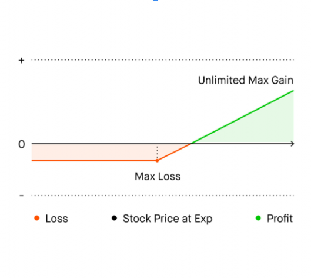
For a deeper analysis of this strategy, check out our detailed primer on trading
calls and puts.
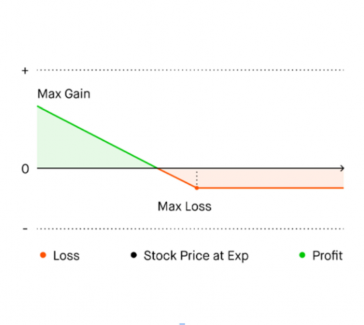
For a deeper analysis of this strategy, check out our detailed primer on trading
calls and puts.
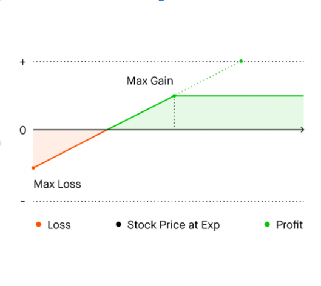
For a deeper analysis of this strategy, check out our detailed primer on trading
calls and puts.
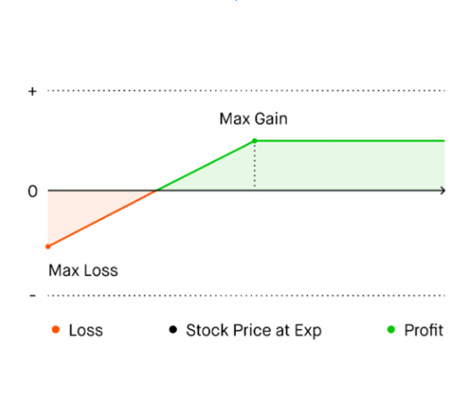
For a deeper analysis of these strategies, check out our detailed primer on
trading calls and puts.
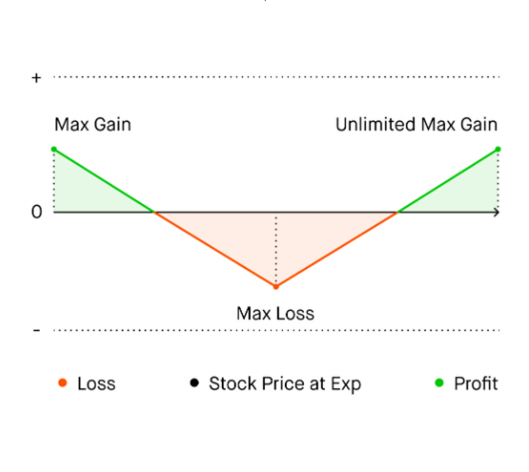
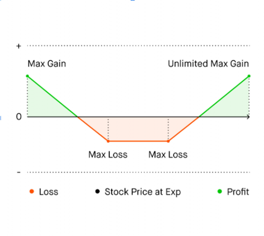
Level 3 options strategies
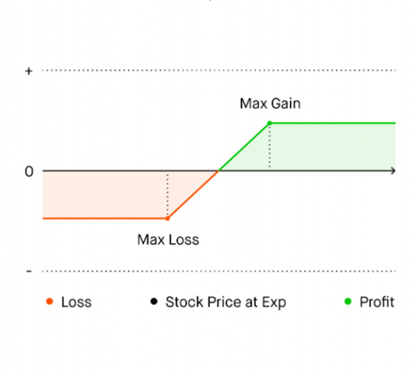
For a deeper analysis of this strategy, check out our detailed primer on trading
spreads.
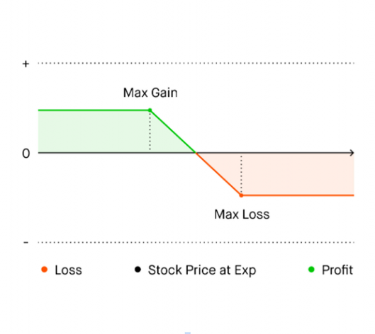
For a deeper analysis of this strategy, check out our detailed primer on trading
spreads.
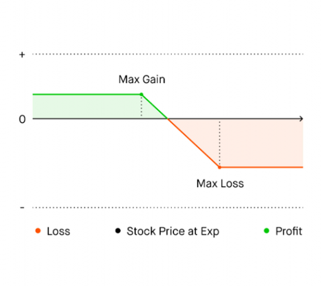
For a deeper analysis of this strategy, check out our detailed primer on trading
spreads.
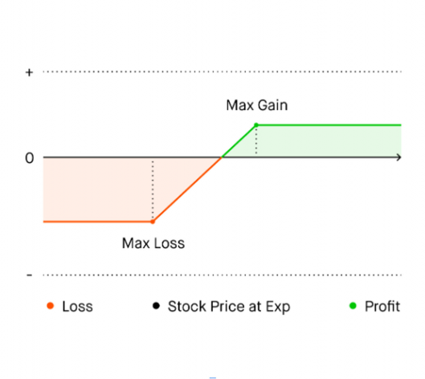
For a deeper analysis of this strategy, check out our detailed primer on trading
spreads.
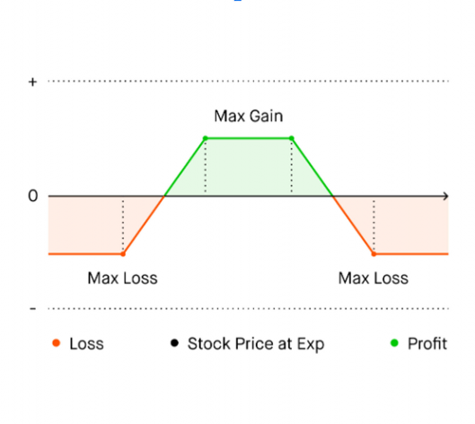
Call credit spread (short Call + long higher strike call) placed above the current
stock price
For a deeper analysis of spread strategies, check out our detailed primer on
trading spreads.
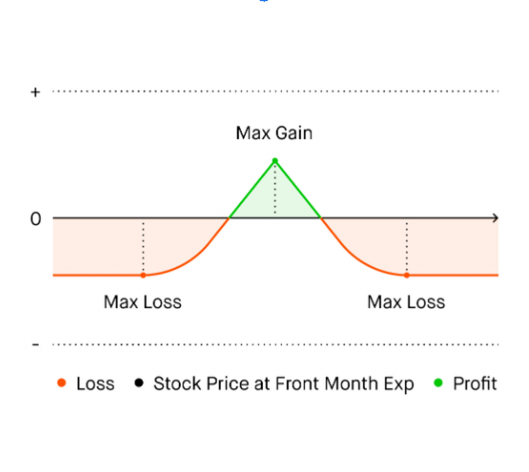
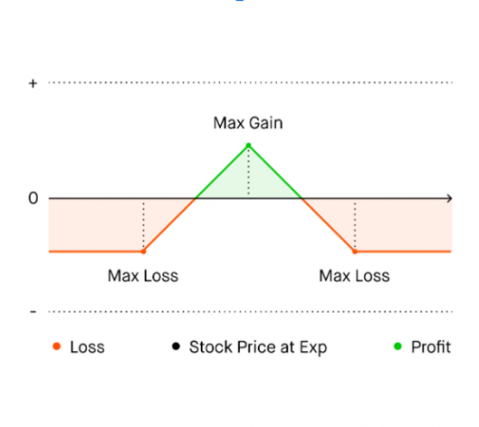
Disclosures
The Chart performs hypothetical calculations based on model assumptions and
other inputs, which may not reflect actual market conditions and do not
guarantee future results. The calculations do not incorporate taxes, fees, or
annualized dividend yields. Failure to exercise an in-the-money options contract
can cause actual profits and losses to differ from calculated values. The maximum
loss on a spread position remains limited only as long as the integrity of the
spread is maintained.
Options carry a significant level of risk and are not suitable for all investors.
Certain complex options strategies carry additional risk. Please read
the Characteristics and Risks of Standardized Options. Options transactions are
often complex and may involve the potential of losing the entire investment in a
relatively short period of time. Certain complex options strategies carry additional
risk, including the potential for losses that may exceed the original investment
amount.
Any hypothetical examples are provided for illustrative purposes only. Actual
results will vary.
Content is provided for informational purposes only, does not constitute tax or
investment advice, and is not a recommendation for any security or trading
strategy. All investments involve risk, including the possible loss of capital. Past
performance does not guarantee future results.
Robinhood Financial does not guarantee favorable investment outcomes.
Customers should consider their investment objectives and risks carefully before
investing in options. Because of the importance of tax considerations to all
options transactions, the customer considering options should consult their tax
advisor as to how taxes affect the outcome of each options strategy. Supporting
documentation for any claims, if applicable, will be furnished upon request.
Reference No. 1550598-2018881
Center > Investing > Investing with Options
Basic Options Strategies
(Level 2)
Although options may not be appropriate for everyone, they can be among the
most flexible of investment choices. Whether you're hedging or seeking to grow
your investments, you can use options to help reach the goals you set for your
portfolio.
This page is an educational tool that can help you learn about the options
strategies available with Level 2 on Robinhood. Before you begin trading options,
it's worth taking the time to identify an investment strategy that makes sense for
you.
Depending on your position, it’s possible for you to lose the principal you invest,
or potentially more – So, it can be helpful to learn more about the different
strategies before diving in.
Buying a Call
Buying a call option (aka a “long call”) means opening a contract that gives you
the right, but not the obligation, to buy shares of a stock at a certain price (the
“strike price”) up until a set date (“expiration date”). In exchange for this right
(known as the ability to “exercise” the option) you pay an upfront cost (the
“premium”). A typical long call option offers the right to buy 100 shares of the
underlying stock.
Because you have this right, it is beneficial for the stock price to increase in value.
Your potential gain is theoretically infinite, while your risk of potential losses is
limited to the premium you paid.
Here’s some lingo to describe how your long call option is performing relative to
the stock price:
You might consider buying a call if you seek to benefit from an upward
movement in a stock price (i.e., you have a bullish outlook), without actually
owning the underlying shares. Your maximum potential gain is unlimited,
because theoretically there’s no cap on how high a stock price can rise. On the
other hand, if the stock price is below the strike price at expiration, your option
expires worthless. When this happens, you would realize your maximum
potential loss, which is the premium you paid upfront.
Instead of buying a call on a company you think will increase in value, you can
buy shares in the company itself. While both strategies can give you upside
exposure on an equivalent number of shares, there are some key differences.
First, options have an expiration date, whereas shares do not — in other words,
you can only exercise or sell your call until its expiration date, but shares typically
do not have the same time constraints or risks. A call option can and may expire
worthless. Second, you generally need less upfront capital to buy a call option
than to buy shares to gain an equivalent level of exposure. As such, options can
magnify your gains or losses based on your initial investment.
Let’s take a look at the fictional MEOW company, whose shares are currently
trading at $110. Since you expect MEOW shares to rise, you decide to pay a $2
premium per share (or $200 in total) to buy one call option on MEOW. This gives
you the right to purchase 100 MEOW shares at a strike price of $120.
If, at expiration, MEOW shares exceed the strike price plus premium paid per
share, you can potentially profit on your long call. In our example, if MEOW rises
above $122 ($120 strike price + $2 premium) and you exercise (and sell shares)
or sell your option, then you should make a profit. Theoretically, your maximum
gain is unlimited, since MEOW could rise to any number. Meanwhile, your
potential maximum loss should be limited to the premium you paid upfront ($2
per share * 100 shares = $200).
Let’s see what happens if your expectation is right, and the stock climbs to $130
before expiration. If you exercise the option, your potential profit per share is the
difference between the stock price and the strike price, minus the premium ($130
stock price - $120 strike price - $2 premium = $8 per share). If the contract is for
100 shares, you would earn $800. Alternatively, if you sell the option, your
potential profit per share is the difference between the sale price and the
premium you initially paid to enter the long call.
Now, let’s look at what happens if the stock doesn’t move as you expected.
Instead of going up, the stock price stays at $110 until the option expires. Since
that’s below the strike price of $120, the call should expire worthless, and you
would lose the $2 premium per share, or $200 for the contract (the most you
could lose on the trade in this example).
Keep in mind, this is a theoretical example. Actual gains and losses will depend
on factors such as the prices and number of contracts involved.
You break even on your long call if the stock closes at the strike price of the
option plus the premium you paid.
Going back to MEOW, the strike price ($120) plus the premium ($2) is $122. If the
stock closes at this exact number on the option’s expiration date (and you
exercise and sell shares, or sell your option), you neither profit nor lose money. If
the stock rises above $122, you have the potential to profit. If it closes at or
below the strike price the call should expire worthless, and you’ll lose the
premium you paid upfront.
When you buy a call option, you have two choices before the expiration date:
exercise it or sell it.
You can exercise a call anytime before it expires to use your right to buy 100
shares of the underlying stock at the strike price. The seller of the call is obligated
to sell the shares to you at this price. You might choose to exercise a call if the
stock price goes higher than your breakeven price (the strike price plus the
premium you paid). In this case, you buy the stock at a discount and can either
sell the shares for a profit or hold them (and perhaps sell them later). Another
reason you might exercise a call is if you can’t sell it for its intrinsic value (the
difference between the stock price and the strike price). If that happens,
exercising it and then selling shares might be the only way to fully realize your
potential gains.
Instead of exercising a call, you could choose to sell it anytime before the
expiration date to try to realize gains or prevent further losses. If the stock price
rises above the breakeven point anytime before the expiration date, selling the
call could allow you to realize a profit. That’s because the contract should be
more valuable than when you bought it, since it gives the owner a right to buy
shares for less than the prevailing market price.
If it doesn’t look like the stock price will rise higher than the break even point by
the expiration date, you could potentially sell the call to get some of your
premium back. (A buyer could be interested because there’s still a chance the
stock price will increase in the time left.) You might also sell your call if you don’t
have enough money to exercise it. In other words, you can’t afford to buy 100
shares of the underlying stock at the strike price.
Of course, you can also choose to do nothing and let the call option expire
worthless. In this case, you’ll lose the premium you paid for it.
Changes in the market can affect the value of your call option, since the price of a
call is based on supply and demand for the contract.
Some options may not be as liquid as others. For instance, there might not be
enough buyers for you to sell-to-close the position, and your contract’s price
might be adversely affected. If your option isn’t very liquid, it can be hard to sell it
for its intrinsic value or at all. The premium might not always correspond directly
to price changes in the underlying stock.
Volatility, a measure of how much and how quickly a stock price changes, can
also affect your position. If you buy a call, you generally benefit when volatility
increases, because the value of your call should also increase, assuming all other
factors are constant. Likewise, the option is likely to decrease in value when
volatility declines.
Finally, the value of your call may decrease as the expiration date nears. That’s
because it becomes less likely that the stock price will change significantly before
the option expires (a factor known as time decay), and because it may be harder
to find buyers for a less liquid option.
When buying a call, there’s no risk of early assignment or dividend risk. You can
learn more about potential edge cases regarding corporate actions here.
Selling a Covered Call
Selling a covered call means opening a contract that gives you the obligation to
sell shares of a stock you already own, at a certain price (the “strike price”) up
until a set date (“expiration date”). In exchange, you receive an upfront amount
(the “premium”) for selling this contract. A typical short call option entails the
obligation to sell 100 shares of the underlying stock, and the call is “covered”
because you already own the shares you might have to sell.
Because you have this obligation and hold the stock, in general it is beneficial for
the stock price to stay relatively flat or increase moderately, and undesirable for
the stock price to fall significantly. Your maximum potential profit is limited, but
your potential losses are limited too.
Here’s some lingo to describe how your short covered call option is performing
relative to the stock price:
Please note: Robinhood does not allow uncovered or naked positions, as selling a
call on stock you don’t own may involve the risk of unlimited losses.
You might consider selling a covered call if you think a stock price will stay
relatively stable or rise somewhat in the near future (i.e., you have a neutral-to-
bullish outlook). You can only do this on Robinhood if you own enough shares in
the underlying stock to cover the short call if it’s assigned.
One reason to use this strategy is to earn additional income on stocks you own. If
you’re planning to hold the underlying shares anyway, selling covered calls can
be a way to help generate income from the premiums you receive (aka to
“monetize” your holdings). But there’s a tradeoff — You give up the potential to
profit if the stock price soars above the strike price. When this happens, the call
has the potential to be assigned. (Note: Calls are usually assigned at expiration,
but can happen at any time beforehand.) Remember, you’re obligated
to sell your shares at the strike price if the buyer chooses to exercise the option.
Selling a covered call can also be a way to help protect yourself if the stock price
declines. The premium you received for the call can slightly offset your losses.
Still, selling a call can’t protect you from losing money if the stock price falls
below the breakeven price.
Here are a few key factors:
prices are more likely to be assigned and typically sell for a higher premium. Calls
with a higher strike price are less likely to be assigned and usually have a lower
premium. A higher strike price gives you more leeway to benefit from a rise in
the stock price, since the ceiling on your potential gains is higher.
Let’s say you buy or already own 100 shares of the fictional MEOW company at a
price of $110, and you expect the stock will stay relatively flat or increase
moderately in the near future. You could consider selling a call option for MEOW
at a strike price of $125, for which you’d receive a $1 premium per share ($100
total).
Your maximum potential gain is limited to the difference between the strike price
and the stock price, plus the premium you received. You can realize this gain if
the call is assigned and you sell the stock, which typically happens when the
stock price is higher than the strike price at expiration.
Meanwhile, in theory, you’d experience your maximum potential loss if the stock
price fell all the way to $0. Like any stock owner, you risk losing the entire value
of the shares—except when you sell a covered call, you would keep the total
premium you received upfront.
Let’s assume your expectation is right, and MEOW’s stock closes at $130 on the
short call’s expiration date. Since this is above the strike price of $125, the call is
assigned, and you are obligated to sell your shares for $125 each. Your gain per
share is $15, or the strike price ($125) minus the price you paid for the stock
($110). Multiplying by the number of shares you own (100), this comes out to
$1,500. You also received a $1 premium per share, or $100 total, for selling the
call. So, your total gain is $1,600 (that is, $1,500 plus $100). Keep in mind, this is
your maximum potential gain in this example. Even though the stock price rose
to $130, the strike price ($125) of the option limits your potential gains. By
comparison, if you had only bought and held 100 shares, the value of your stock
would’ve increased by $2,000 — that is, ($130 - $110) * 100 shares.
Let’s say MEOW’s stock price closes at $125 on the call’s expiration date. Since
this is at the strike price, the call should expire worthless. Once again, your gain
per share is the current stock price ($125) minus the price you paid for the stock
($110), which equals $15. If the contract is for 100 shares, you would gain $1,500
from owning the stock. To calculate your total gain though, add the $1 premium
you received per share for selling a call option ($100 total). In this instance, your
total profit for the strategy is $1,500 plus $100, or $1,600. If you had only bought
and held 100 shares, the value of your stock would’ve increased by $1,500.
Now, let’s look at what happens if MEOW’s stock price doesn’t move as you
expected, and instead closes at $100 on the call’s expiration date. To calculate
the decline in the value of your stock, take the current stock price ($100) and
subtract the price you paid for it ($110). Multiply this by the 100 shares you own,
and this comes to -$1,000. The premium you received upfront ($100) helps offset
this decline, meaning your net loss is $900. If you had only bought and held the
shares, your net loss would’ve been $1,000.
Keep in mind, this is a theoretical example. Actual gains and losses will depend
on factors such as the prices and number of contracts involved.
You break even on your covered call if, on the expiration date, the stock closes at
the price you originally paid for the stock minus the premium you received per
share for selling the call.
Going back to MEOW, you paid $110 per share to buy the stock. Subtracting the
premium you received per share equals $109 ($110 - $1). If the stock closes at
this price on the expiration date, the option should expire worthless, and you
should neither gain nor lose money. If the stock falls below $109, you should
experience a loss.
When you sell a covered call option, there are several possibilities for what could
happen next: Buying to close your position, assignment, or expiration.
By selling a call option against your shares, you create an “open” position. You
can later “close” it by buying back the option, anytime before it expires, which
can allow you to keep your stock and avoid getting assigned. Holding the stock
also gives you the potential to sell additional covered calls once the collateral
(your shares) is freed up.
Alternatively, the call you sold could get assigned (meaning the buyer decides to
exercise it). Remember, since you’re the seller, you can’t exercise it — Only the
buyer can do this. If you’re assigned, then you must sell the stock at the strike
price. Often, this happens if the stock price is above the strike price at expiration.
But a call can be assigned early, too. This is especially likely to happen before ex-
dividend dates, the last day by which you can buy a stock in order to be eligible
to receive dividends on the shares. If early assignment happens before the ex-
dividend date, you will not be entitled to the dividend.
If the stock price is below the strike price at expiration, your call will likely expire
worthless. This would free up your shares, allowing you to potentially: sell
another call, keep holding the stock, or sell your shares.
Changes in the market can affect the value of your covered call and your ability
to close it. First, you can benefit from an increase in the price of the underlying
stock, since you own those shares. However, this is only true up to the strike
price, which puts a limit on your potential gains. Also, as the stock price rises, the
value of your short call position declines.
Volatility, a measure of how much and how quickly a stock price changes, can
also affect your position. If you sell a covered call, you generally benefit when
volatility declines, because the value of the call you sold should also decline,
assuming all other factors are constant. On the other hand, an increase in
volatility in the underlying stock can make it more expensive to close your
position.
If the stock price and volatility stay pretty flat, the value of your covered call
position tends to increase as time passes. As the expiration date nears, the price
of the short call falls, making it less expensive to potentially close the position.
For selling a covered call, two of the more common edge cases are: Early
assignment risk and dividend risk.
Early assignment risk
An early assignment occurs when the contract a trader sold is exercised before its
expiration date. If a trader is assigned on the short call option, the trader will be
obligated to sell their shares of stock at the covered call’s strike price. In this case,
a trader will no longer own the shares associated with the covered call option,
and see an increase in buying power in their Robinhood brokerage account.
Learn more about early assignments here.
Dividend risk
Dividend risk is the risk that a trader will be assigned on a short call option the
night before the ex-dividend date (and thus, not receive the dividend). Traders
can avoid this by closing their position before the end of the regular-hours
trading session the night before the ex-dividend date. Learn more about
dividend risks here.
Buying a Put
Buying a put option (aka a “long put”) means opening a contract that gives you
the right, but not the obligation, to sell shares of a stock at a certain price (the
“strike price”) up until a set date (“expiration date”). In exchange for this right
(known as the ability to “exercise” the option), you pay an upfront cost (the
“premium”). A typical long put option offers the right to sell 100 shares of the
underlying stock. Keep in mind, Robinhood only allows you to exercise a put
when you already own the underlying shares you’re selling.
Because you have the right to sell shares, it’s generally beneficial for the price of
the underlying stock to fall in value (i.e., you have a bearish outlook). Your
potential gain is significant but limited, and your potential losses are limited, too.
Here’s some lingo to describe how your put option is performing relative to the
stock price:
You might consider buying a put if you expect a stock price to decrease (i.e., you
have a bearish outlook). When you buy a put, you expect that the value of the
put will rise as the price of the underlying stock drops (though not necessarily
dollar-for-dollar), before the expiration date. In theory, the maximum potential
gain is equal to the strike price of the put minus the premium per share,
multiplied by 100. You should realize the maximum gain if the stock price falls all
the way to $0.
On the other hand, your maximum potential loss is limited to the total premium
(aka premium per share * 100) you paid for the long put. You will lose this
amount if the put expires worthless, which should happen if the stock price
doesn’t drop below the strike price before expiration.
Here are a few key factors:
are constant. That’s because there’s more time for the stock price to
potentially fall. For the same reason, the premium is likely to be higher for
options with later expiration dates.
Premium: This is the price you pay to buy the put. The more you pay
for the put, the more you could potentially lose.
Let’s say you think the stock price of the fictional MEOW company, which is
trading at $110 a share, will fall soon. You pay a $1 premium ($100 total) to, giving you the right to sell 100 MEOW shares at a strike price
of $95.
You’d reach your maximum potential gain if the price of the underlying stock fell
to $0, which is theoretically possible but highly unlikely. In this case, your
maximum potential gain equals the strike price of the put minus the premium
you paid ($95 - $1 = $94). If the options contract represents 100 shares, the most
you could gain is $9,400. Your maximum potential loss is limited to the total
premium ($100). In general, your total premium will depend on factors such as
the strike price of the contract, the expiration date, and the number of contracts
purchased.
Let’s see what happens if your expectation is right, and the stock falls to $90 on
the expiration date. If you sell the option, your potential gain per share is the
difference between the strike price and the stock price, minus the premium ($95
strike price - $90 stock price - $1 premium = $4). If the contract represents 100
shares, your total gain is $400.
Let’s see what happens if the stock doesn’t move as you expected. Instead of
going down, the stock price rises to $120 by the time the option expires. Since
that’s above the strike price of $95, the put should expire worthless, and you
would lose the $1 premium, or $100 in total. Again, this is the maximum you
could lose in this example. You’ll experience this maximum loss anytime the stock
price is at or above the strike price at expiration.
Keep in mind, this is a theoretical example. Actual gains and losses will depend
on factors such as the prices and number of contracts involved.
You break even on your long put if the stock closes at the strike price of the
option minus the total premium you paid.
Going back to MEOW, the strike price minus the premium per share ($95 - $1)
equals $94. If the stock closes at the breakeven point on the expiration date, you
should neither gain nor lose money. If the stock drops below $94, you have the
potential to profit. If it closes at or above $95, the put should expire worthless,
and you’ll lose the premium you paid upfront.
When you buy a put option, you have two choices before the expiration date:
Exercise it or sell it.
As long as you already own enough shares of the stock to exercise your put, you
can exercise your right to sell the shares at the strike price anytime before the
option expires. The seller of the put is obligated to buy the shares from you at
this price. You might choose to exercise your put option if the stock price drops
below your breakeven point (the strike price minus the premium per share). In
this case, you’d sell your shares for more than the prevailing market price.
Another reason you might exercise a put is if you can’t sell it for its intrinsic value
(the difference between the stock price and the strike price). If that happens,
exercising it might be the only way to fully realize your potential gains.
*Please note: Robinhood only allows you to exercise a put if you already own the
shares you’ll be selling. *
Instead of exercising a put, you may sell-to-close the position anytime before the
expiration date to try to realize gains or prevent further losses. If the stock price
falls below the breakeven point anytime before expiration, closing the position
could allow you to realize a gain. That’s because the contract should be more
valuable than when you bought it, since it gives the owner the right to sell shares
for more than the prevailing market price.
If it doesn’t look like the stock price will drop below the breakeven point by the
expiration date, you could potentially close your position to recoup some of your
premium. (A buyer could be interested because there’s still a chance that the
stock price will decrease in the time left.) You might also sell-to-close if you don’t
own enough shares to exercise the contract.
Of course, you can also choose to do nothing and let the put option expire
worthless. In this case, you’ll experience a loss equal to the total premium you
paid upfront.
Changes in the market can affect the value of your put option, since the price of
a put is based on supply and demand for the contract.
Some options may not be as liquid as others. For instance, there might not be
enough buyers for you to sell-to-close the position, and your contract’s price
might be adversely affected. If your option isn’t very liquid, it can be hard to sell it
for its intrinsic value or at all. The premium might not always correspond directly
to price changes in the underlying stock.
Volatility, a measure of how much and how quickly a stock price changes, can
also affect your position. If you buy a put, you generally benefit when volatility
increases, because the value of your put should also increase, assuming all other
factors are constant. Likewise, the option is likely to decrease in value when
volatility declines.
Finally, the value of your put may decrease as the expiration date nears. That’s
because it becomes less likely that the stock price will change significantly by the
time the option expires (a factor known as time decay), and because it may be
harder to find buyers for a less liquid option.
When buying a put, there’s no risk of early assignment or dividend risk. You can
learn more about potential edge cases regarding corporate actions here.
Selling a Cash Covered Put
Selling a cash-covered put option (aka writing a cash-secured short put) means
opening a contract where you have the obligation to buy shares of a stock at a
certain price (the “strike price”) up until a set date (“expiration date”), and you
already have the cash to meet your obligation (aka it’s “cash-covered”). You
receive an upfront amount (the “premium”) in exchange for selling this contract.
A typical short put option entails the obligation to buy 100 shares of the
underlying stock.
Because you have this obligation, in general it’s beneficial for the stock price to
stay relatively flat or increase in the future, and it’s undesirable for the stock price
to fall. Your maximum potential profit is limited, while your maximum potential
loss could be substantial.
Here’s some lingo to describe how your short covered put option is performing
relative to the stock price:
Please note: Robinhood does not allow uncovered or naked positions.
You might consider selling a cash-covered put if you think a stock price will stay
relatively flat or rise in the future (i.e., you have a neutral-to-bullish outlook). You
can do this on Robinhood only if you hold enough cash to cover your short put.
There are typically two main reasons to use this strategy: To potentially buy ayou would like to own for less than its prevailing market price, or to earnthrough the premium you receive by selling the contract
(aka “monetizing” uninvested cash). If the stock price ends up staying at or above
the strike price before expiration, the option should expire worthless and you get
to keep the premium you received for the put. If the stock price closes below the
strike price on the expiration date, the put will likely be assigned, in which case
you would buy shares at the strike price and keep the premium you received for
the put. In that situation, you’re paying above market price for the shares, but
you’d be generally paying less than you would have if you bought shares at the
time that you sold the put.
Keep in mind that your losses from being assigned can be significant, if the strike
price is much higher than the prevailing market price.
Here are a few key factors:
receive, the more likely the put will be assigned, and the more likely it is
that you’ll need to buy the underlying shares at the strike price.
Let’s say you expect stock in the fictional PURR company, which is trading at a
price of $50 a share, to stay relatively flat or increase in the near future. So, you
decide to sell a put option for PURR shares at a strike price of $45, receiving a $2
premium. You have enough cash in your brokerage account to buy 100 PURR
shares at this price ($45 * 100 = $4,500 of uninvested cash), so your put is
covered.
Your maximum potential gain is the premium you received. In this case, that’s $2
per share, or $200 total. This should be realized if the stock closes at or above the
strike price on the expiration date, and the option expires worthless.
In the worst-case scenario, the stock price could fall all the way to $0. If that
happens with PURR, your loss would be $43 per share ($0 - $45 + $2). That’s a
$4,300 loss for a contract that represents 100 shares.
Let’s say your expectation is met, and PURR’s stock price climbs to $55 at
expiration. Since this is above the strike price, the put shouldn’t be assigned and
should expire worthless, allowing you to gain $200 in total premium for 100
shares. This is the maximum potential gain on this trade, even if the stock price
increases further.
Instead, let’s assume PURR’s stock price falls to $35 per share at expiration. The
option should be assigned, obligating you to buy PURR stock for $45, which is
$10 above its market price. Assuming you immediately sell the shares at $35, the
premium you received upfront partially offsets your loss of $10 per share. To
calculate your loss per share, subtract the strike price from the price of the stock
at expiration, and add the premium you received. In this example, ($35 - $45 +
$2 = -$8 per share). So for a contract of 100 shares, you would lose $800.
Keep in mind, this is a theoretical example. Actual gains and losses will depend
on factors such as the prices and number of contracts involved.
You break even on your cash-covered put, if the stock closes at the strike price of
the option minus the premium you received.
Going back to PURR, the breakeven point is ($45 strike price - $2 premium =
$43). If the stock closes at this breakeven point on the expiration date, you
should neither gain nor lose money. If the stock price falls below $43, you’ll likely
experience a loss.
When you sell a cash-covered put, there are several potential outcomes up until
the expiration date: Buying to close your position, assignment, or expiration.
By selling a cash covered put option, you “open” a position. You can “close” it by
buying back the option. You can choose to do this at any time until it expires, in
order to avoid getting assigned. You would then have the possibility of writing
another cash covered put, depending on the amount of cash you have available
to be held as collateral.
Alternatively, the put you sold could get assigned, meaning the buyer decides to
exercise their right to sell the shares at the strike price. Remember, since you’re
the seller of the put, you can’t exercise it — Only the buyer can do this. If the
buyer decides to exercise their put, then you must buy the stock at the strike
price. Often, this happens if the stock price is below the strike price at expiration.
A put could also be assigned early, but because you sold a cash-covered put, you
have already accepted the obligation to buy shares at the strike price and have
the cash collateral to do so. After buying the shares, you can sell the shares if
you’d like to.
If the put you sold expires worthless, you keep the premium and can do a few
things: Sell another put, buy shares of stock, invest the cash somewhere else, or
simply leave it uninvested.
Changes in the market can affect the value of your put option and your ability to
close it. First, some options may not be as liquid as others. This means there
might not be enough sellers to allow you to buy-to-close your position, and
your contract’s price might be adversely affected. If your option isn’t very liquid,
it can be hard to buy it back for its intrinsic value.
Volatility, a measure of how much and how quickly a stock price changes, can
also affect your position. If you sell a covered put, you generally benefit when
volatility declines, since the value of the option you sold should also decrease,
assuming other factors stay constant. On the other hand, an increase in volatility
in the underlying stock can make it more expensive to buy-to-close the position.
If the stock price and volatility stay relatively flat, the value of your cash-covered
put option tends to decrease as time passes. As the expiration date nears, it
becomes less likely that the stock will drop below the strike price, and more likely
that the option will expire worthless, allowing you to keep the premium. Hence, it
is generally beneficial for the short position when the option loses value as it
approaches expiration.
For selling a cash covered put, early assignment risk is one of the more common
edge cases.
Early assignment risk
An early assignment occurs when the contract a trader sold is exercised before its
expiration date. If a trader is assigned on the short put option, the trader will be
obligated to buy the shares of stock at the covered put’s strike price. Learn more
about early assignments here.
You can learn more about potential edge cases regarding corporate actions here.
Straddles and Strangles
Using long straddles and strangles means buying a call option and a puton the same underlying stock with the same expiration date. Buying a call
means entering a contract that gives you the right, but not the obligation, to buy
shares of a stock at a certain price (the “strike price”) up until a set date
(“expiration date”). Meanwhile, buying a put gives you the right, but not the
obligation, to sell shares of a stock at the strike price by the expiration date. In
exchange for these rights (known as the ability to “exercise” the options) you pay
an upfront cost (the “premium”) for these contracts.
A straddle is composed of a long call and a long put at the same strike price,
meaning you have the right to buy and sell shares at the same strike price.
A strangle is also composed of long call and put options, but the call option has
a higher strike price than the put option. A typical option allows you to buy or
sell 100 shares of the underlying stock at the exercise price.
Here’s some lingo to describe how your straddles and strangles are performing
relative to the stock price. In straddles and strangles, when one of the two
options is in-the-money, the other is always out-of-the-money:
Please note: Robinhood does not allow short straddles or short strangles, because
these strategies involve selling uncovered call and put options (aka naked
positions). In an uncovered short position, the seller doesn’t have the required
collateral, which means their position involves the risk of unlimited losses.
You might consider opening a straddle or strangle if you expect big changes in a
stock price before a certain date, but you’re not sure in which direction. For
example, perhaps you believe a major legal or regulatory decision is around the
corner. If your expectation of higher volatility pans out, you could realize a gain
regardless of whether the stock price rises or falls (i.e., your outlook can be both
bullish and bearish).
Your maximum potential gain is unlimited, since the stock price could
theoretically rise to any number. On the other hand, the stock price could drop to
$0, which could also yield significant gains for the straddle or strangle holder.
Both of these scenarios are highly unlikely though. Your maximum potential loss
is the total premium you pay upfront for the options. Strangles are usually less
expensive to open than straddles, but strangles require the stock to move more
for you to realize a gain.
It might make sense to buy only a call if you think the stock price will increase
(i.e., you have a bullish outlook) or buy only a put if you think it will fall (i.e., you
have a bearish outlook). If you think the price will move sharply, but you aren’t
sure of which direction, a straddle or strangle can help you gain exposure either
way. However, in exchange for this flexibility, you need to pay two premiums
because you’re buying both a call and a put.
Here are a few key factors:
factors are constant. That’s because the stock would have to rise or fall
more sharply for you to realize a gain.
Let’s say you think the stock price of the fictional HISS company, which is trading
at $100, will move sharply soon — but you don’t know in which direction. You
decide to open a strangle: You pay a $2 premium per share to buy one call
option giving you the right to purchase HISS shares at a strike price of $110. You
also pay a $3 premium per share to buy one put option giving you the right to
sell HISS shares at a strike price of $90. Notice that the long call has a higher
strike price than the long put.
If the stock price increases, your maximum potential gain is theoretically infinite,
since there is no ceiling on how much the stock price can rise. You could also
profit if the stock price decreases, but there is a limit on how low a stock price
can drop ($0). On the other hand, the maximum potential loss is limited to the
two premiums you paid upfront ($2 + $3 = $5 per share). Assuming the options
represent 100 shares, you could lose up to $500 total in this example.
Let’s see what happens if the stock price falls to $80 at expiration. If you sell the
put option, your potential gain per share is the difference between the put’s
strike price and the stock price, minus the premium ($90 strike price - $80 stock
price - $5 premium = $5 per share). If the contract is for 100 shares, you’d gain
$500. Your call option should expire worthless since it’s out-of-the-money.
Instead, say the stock price rises to $120. If you sell the call option, your potential
gain per share is the difference between the stock price and the call’s strike price,
minus the premium ($120 stock price - $110 strike price - $5 premium = $5 per
share). If the contract is for 100 shares, you would again gain $500. Your put
option should expire worthless since it’s out-of-the-money.
Let’s consider what happens if things don’t go as you expected, and the stock
price stays at $100. Both of your options should expire worthless because they
are both out-of-the-money. Your loss per share is the total premium you paid for
both options ($5), or $500 in total. This is the most you could lose on the trade in
this example.
Keep in mind, this is a theoretical example. Actual gains and losses will depend
on factors such as the prices and number of contracts involved.
There are two breakeven points on a straddle or a strangle: You break even if
the stock closes either above the call strike price (“higher breakeven point”) or
below the put strike price (“lower breakeven point”) by the amount of total
premium you paid upfront. (Remember, the options have the same strike price in
a straddle.)
Going back to HISS strangle, the strike price of the long put ($90) minus the
premium per share ($5) is $85. If the stock closes at the lower breakeven point on
the expiration date, you neither gain nor lose money. You can sell or exercise the
long put, while the long call should expire worthless. If the stock closes below
$85, you could realize a gain.
To calculate the second breakeven point, add the strike price of the long call to
the premium per share ($110 + $5 = $115). If the stock closes at the higher
breakeven point on the expiration date, you neither gain nor lose money. You
can sell or exercise the long call, while the long put should expire worthless. If the
stock closes above $115, you could realize a gain.
If the stock stays between $85 and $115 until expiration, you can potentially lose
money. Again, in using this strategy, you’re expecting a dramatic move in the
stock price.
When you open a straddle or strangle, you have two choices before the
expiration date: Exercise one of your options or sell them.
You can exercise a call or put anytime before it expires to use your right to buy or
sell 100 shares of the underlying stock at the strike price. You might choose
to exercise a call if the stock price exceeds your higher breakeven point, or
you might exercise a put if the stock price goes below your lower breakeven. Exercising an option might make sense if you have the necessary collateral
(either cash or shares) to buy or sell the stocks at the strike price. Another reason
you might exercise a call or put is if you can’t sell it for its intrinsic value (the
difference between the stock price and the strike price). If that happens,
exercising it and then selling shares might be the only way to fully realize your
potential gains.
Instead of exercising your options, you could choose to sell them anytime before
the expiration date to try to realize gains or prevent further losses. If the stock
price goes beyond one of the breakeven points anytime before expiration, selling
that option could allow you to realize a gain. That’s because the contract should
now be more valuable than when you bought it, since it gives the owner the right
to buy shares for less (call option), or sell them for more (put option), than the
prevailing market price.
If it doesn’t look like the stock price will move past one of the breakeven points
by the expiration date, you can sell the options to try to get some of your
premium back. (A buyer could be interested because there’s still a chance the
stock price will move dramatically in the time left.) You might also sell your
options if you don’t have enough assets to exercise them. In other words, you
can’t afford to buy 100 shares of the underlying stock at the strike price, or you
don’t have the shares available to sell.
Of course, you can also choose to do nothing and let the options expire
worthless.In this case, you’ll experience a loss equal to the total premium you
paid upfront.
Changes in the market can affect the value of your options and your ability to sell
them. First, some options aren’t as liquid as others. This means there may not be
enough buyers or sellers to allow you to buy or sell without adversely affecting
your contracts’ price. If your option isn’t very liquid, it can be hard to sell it for its
intrinsic value.
Also, the price of an option (aka its premium) is based on the supply and
demand for the contract. That means the premium might not always correspond
to price changes in the underlying stock.
Volatility, a measure of how much and how quickly a stock price changes, can
also affect your position. If you buy a straddle or strangle, you generally benefit
when volatility increases, because the value of your call and put should also
increase, assuming all other factors are constant. Likewise, the option is likely to
decrease in value when volatility declines.
If the stock price stays relatively flat, the premiums on your options may decrease
as the expiration date nears. That’s because it becomes less likely that the stock
price will change significantly before the options expire (a factor known as time
decay).
When buying a strangle or straddle, there’s no risk of early assignment or
dividend risk. You can learn more about potential edge cases regarding
corporate actions here.
Disclosures
Options trading entails significant risk and is not appropriate for all investors.
Certain complex options strategies carry additional risk. Robinhood Financial
does not guarantee favorable investment outcomes and there is always the
potential of losing money when you invest in securities, or other financial
products. Investors should consider their investment objectives and risks carefully
before investing. To learn more about the risks associated with options, please
read the Characteristics and Risks of Standardized Options before you begin
trading options. Please also be aware of the risks listed in the following
documents: Day Trading Risk Disclosure Statement and FINRA Investor
Information. Examples contained in this article are for illustrative purposes only.
Supporting documentation for any claims, if applicable, will be furnished upon
request.
Reference No. 1312477-2018881
Expiration, Exercise, and
Assignment
Expiration
Unlike a stock, each option contract has a set expiration date. The expiration date
significantly impacts the value of the option contract because it limits the time
you can buy, sell, or exercise the option contract. Once an option contract
expires, it will stop trading and either be exercised or expire worthless.
There are a few important things to keep in mind as the expiration date of your
option contract nears:
We’ll attempt to exercise any option you own that is $0.01 or more in the
money, as long as your brokerage account has the required buying power
(in the case of a call option) or the necessary underlying shares to sell (in
the case of a put option). Keep in mind that managing your options
positions, including taking proactive steps to mitigate risk, is ultimately
your responsibility.
If you don’t have enough buying power or underlying shares to exercise
your option, we may attempt to sell the contract in the market for you
within the last hour before the market closes on the options' expiration
date.
Robinhood’s risk checks are designed to close positions which accounts
cannot support and take into consideration the value of a position, the
implied risk, and the customer’s current balance, among other things.
If your option is in the money at the close, Robinhood will attempt to exercise it
for you at expiration unless:
You don’t have sufficient buying power.
The exercise would result in a short stock position.
You have asked Robinhood to submit a Do-Not-Exercise request on your
behalf.
The cut-off time for submitting a Do-Not-Exercise request is 5 PM ET.
If you have a long call about to expire:
If the contract is in the money (or at risk of being in the money), we’ll
review your account to see if you have enough buying power to purchase
the underlying shares.
If you don’t have enough buying power to purchase the underlying shares,
we may attempt to sell the option. For example, if you have 10 contracts,
but only enough buying power to purchase 500 shares, we may attempt to
sell 5 contracts and allow 5 contracts to be exercised for a total of 500
shares. To avoid this, you can close the position or roll it to a later date
prior to the last hour of trading (before 3:00PM ET on normal trading
days). Keep in mind that options rolling involves simultaneously closing a
position (realizing any gains or losses) and opening a new one. Also,
options rolling is only available in margin accounts.
If you have a long put about to expire:
If the contract is in the money (or at risk of being in the money), we’ll
review your account to see if you have enough of the underlying shares to
sell.
If you don’t have enough of the underlying shares, we may attempt to sell
the option. For example, if you have 10 contracts and own 500 shares, we
will attempt to sell 5 contracts and allow the remaining 5 contracts to be
exercised, which would result in 500 shares sold from your brokerage
account. To avoid this, you can close the position or roll it to a later date
prior to the last hour of trading (before 3:00PM ET on normal trading
days). Keep in mind that options rolling involves simultaneously closing a
position (realizing any gains or losses) and opening a new one. Also,
options rolling is only available in margin accounts.
If you have a spread about to expire:
If both legs are in the money (and neither leg is at risk of being out of the
money at expiration). The short leg may be assigned, and the long leg may
be exercised to offset the assignment.
If the spread is partially in the money or close to being partially in the
money (i.e. only one leg is in the money or at risk of being in the money),
we may attempt to close the entire spread (including the leg that is out of
the money). To avoid this, you can close the position prior to the last hour
of trading (before 3:00PM ET on normal trading days).
If both legs are out of the money (and they aren’t at risk of being in the
money at expiration), we typically won’t take action and both options
should expire worthless.
Once your contract expires, we’ll remove it from your home screen. You can view
your expired contracts in your account history.
NOTE
After-hours price movements can change the in the money or out of the money
status of an options contract.
If for any reason we can't sell your contract, and you don’t have the necessary
buying power or shares to exercise it, we may attempt to submit a Do Not
Exercise request to the Options Clearing Corporation (OCC), and your contract
should expire worthless.
To determine if an option position is “at risk of being in the money,” Robinhood
will calculate an estimated upper and lower bound for the underlying security’s
close price on the expiration date. If your option’s strike price falls within these
parameters, we may place an order to close your position.
Exercise
If your option is in the money, Robinhood will typically exercise it for you at
expiration automatically.
You can also exercise your options contract early in the app:
Navigate to the options position detail screen
Select Exercise
You’ll then be guided through steps to exercise your contract.
NOTE
Before expiration day, an early exercise request will be submitted immediately if
it’s placed during trading between 9 AM ET and 4 PM ET. Please contact us
before 5 PM ET if you’d like to cancel the exercise request.
Early exercise requests submitted after 4 PM ET will be queued for the next
trading day. You can cancel the pending exercise request until 11:59 PM ET.
On expiration day, you won’t be able to submit an early exercise request in the
app or on the web after 4 PM ET. Please contact us to request an exercise request
after 4 PM ET. We will attempt to accommodate exercise requests until 5 PM ET
on a best-efforts basis.
Once you exercise an option, you’ll see a card displayed on your home screen
that confirms your option was exercised and that the associated shares are
pending. You’ll also receive an email and push notification before the next
trading day confirming that your option was exercised or assigned (after we
receive confirmation from the OCC).
If your option is out-of-the-money, Robinhood will take no action and the
contract typically will expire. If you’d like to submit a Do Not Exercise request,
you will need to send an email to our Options Support Team.
NOTE
Instructions for a Do Not Exercise need to be received by Robinhood before
5:00PM ET on the expiration date.
Assignment
When you are assigned, you have the obligation to fulfill the terms of the
contract. When you sell-to-open an options contract, you can be assigned at any
point prior to expiration (regardless of the underlying share price).
Depending on the collateral held for your short contract under the following
circumstances, there are a few different things that could happen.
The shares you have as collateral should be sold to settle the assignment. No
additional action should be necessary.
The buying power you have as collateral will be used to purchase shares and
settle the assignment. No additional action should be necessary.
You have the obligation to sell shares of the underlying security at the strike
price. In this case, the long leg (the call option you bought) should provide the
collateral needed to cover the short leg.
You can exercise the long leg of your spread, purchasing the shares you need to
settle the assignment.
You provide the shares necessary to settle the contract when you’re assigned, so
your brokerage account is now short 100 shares of XYZ. To cover the short
position in your account, you could exercise the XYZ call contract you bought to
receive 100 shares of XYZ. Alternatively, you could also buy back the 100 short
shares from the market followed by selling the long call in the open market to
capture any time/extrinsic value remaining in the option.
You could sell the long leg of your spread, then separately purchase the shares
you need to cover the assignment.
When you’re assigned, you sell the shares necessary to settle the assignment and
your brokerage account is now short 100 shares of XYZ. Because your long
option is out of the money, exercising it would result in purchasing the
underlying security at a price higher than what is currently offered in the
marketplace. Instead, you could sell the call contract you own, and then
separately buy 100 shares of XYZ to settle the short call assignment.
If you’re assigned on the short leg (the put contract you sold) of your spread, you
have the obligation to buy shares of the underlying security at the strike price.
In this case, the long leg (the put contract you bought) should provide the
collateral needed to cover the short leg. When you exercise the long leg of your
spread, you can sell shares aiming to recover the funds you used to settle the
short put assignment.
When you’re assigned, you have to buy 100 shares of XYZ at the strike price of
the assigned put. To help offset the assignment, you can exercise the long XYZ
put contract you own to sell the 100 shares of XYZ you just purchased from the
short assignment. Alternatively, you could also sell both the shares and the long
put in the open market to capture any time/extrinsic value remaining in the long
put.
You can sell the long leg of your spread, then separately sell the shares you need
to cover the assignment.
When your short leg is assigned, you buy 100 shares of XYZ, which may put your
brokerage account in a deficit of funds. You can’t exercise the long leg to cover
the deficit in your account since it’s out of the money. Instead, you can sell the
put contract you own, then separately sell the 100 shares of XYZ you just
received from the assignment to help cover the deficit in your account.
Alternatively, you can continue to hold the long stock position if your account
can support the purchase of the 100 shares.
Check out Advanced Options Strategies (Level 3) to learn more about calls, puts,
and multi-leg options strategies.
Unassigned Anticipated Assignment
On rare occasions, an in the money short option will not get assigned. This
happens when the counterparty files a Do Not Exercise request for their in the
money option, or a post-market movement shifts the option from in the money
to out of the money (and the contract holder decides not to exercise). In this
scenario, you will likely be long or short the stock the following trading day,
potentially resulting in an account deficit or margin call.
All resulting short positions must be covered the following trading day.
The scenario listed above could result in a gain or loss that’s greater than
theoretical max gain/loss on the position.
Early Assignment
If you’re trading a multi-leg options strategy and you are assigned on your short
position before expiration, there are a few things to keep in mind.
Early assignment may result in decreased buying power. This is because the
positions you hold are used to calculate your buying power, and at the time
you’re assigned you may not have the shares (for call spreads) or buying power
(for put spreads) needed to cover the deficit in your account. If you have an
account deficit, you can’t open new positions until the deficit is resolved.
Early assignment may also result in an account deficit if it causes you to use more
buying power than you have available. When you have an account deficit, there
are a few potential actions that you can take, including exercising your long
contract or buying/selling shares. If you have an account deficit and choose to
exercise your long contract to increase your buying power, you will not be able
to open new positions while your exercise is pending. But you should be able to
open new positions once your exercise has been processed if exercising your
long contract is sufficient to cover your account deficit.
Early assignment may also result in margin call (assuming you have margin
investing enabled on your brokerage account) if it causes your account value to
fall below your margin maintenance requirement. When you have a margin call,
there are a few potential actions that you can take: exercising your long contract,
buying/selling shares by placing orders, or depositing enough funds to cover the
margin call. If you have a margin call and choose to exercise your long contract
to decrease your margin deficiency, your margin call may persist while your
exercise is pending or, further, if the exercise was not sufficient enough to cover
your margin deficit. If exercising your long contract is sufficient to cover your
margin deficiency, any margin calls should be satisfied once your exercise is
processed.
Keep in mind that we can’t process an early assignment before the end of the
trading day and, so we can’t exercise the long leg until the next trading day (at
the earliest). That’s because the Options Clearing Corporation (OCC) doesn’t
notify us of your assignment until after the market closes (when they process
assignments). While funds and shares that result from exercises are made
available immediately during market hours, positions exercised after market
hours are queued and credited to your account the next trading day.
In the Money and Out of the Money
These labels refer to the position of the underlying security’s price relative to the
strike price of the option. They’re also sometimes referred to as the moneyness
of an option.
A call option is in the money if the underlying security's price is above the
option’s strike price.
A call option is out of the money if the underlying security’s price is below
the option’s strike price.
A put option is in the money if the underlying security’s price is below the
option’s strike price.
A put option is out of the money if the underlying security’s price is above
the option’s strike price.
EXAMPLE
A $20 call option for XYZ stock would be in the money if XYZ stock was trading
at $20.01 or greater. A $20 Put option for XYZ stock would be in the money if
XYZ stock was trading at $19.99 or below.
Keep in mind that an option contract being in the money doesn’t necessarily
mean that its owner will make a profit if they were to exercise it.
Pending Shares
A few things can happen if your option is exercised early, depending on the time
of day.
If the early exercise occurs between 9 AM ET and 4 PM ET, the associated shares
should appear in your account immediately; you shouldn’t see any pending
exercise in your account.
If the early exercise happens after 4 PM ET, it will be queued for the next trading
day, and the associated shares will remain pending until the exercise has cleared.
Once your contract has been exercised or assigned, we’ll hold the associated
shares or cash collateral until we receive confirmation from the OCC that all
aspects of the exercise or assignment have cleared. This process typically takes 1
business day. Once completed, the pending state of the exercise or assignment
will be removed and your account will be updated accordingly.
Finding Your Trade Details
Select the Account icon in the bottom-right corner of your screen
Select History
Choose the option you’re looking for (e.g. XYZ $1,200 Call 10/21 Exercise)
Select the Account icon in the bottom-right corner of your screen
Select the Menu icon in the upper-right corner of your screen
Select Statements and History
Choose the option you’re looking for (e.g. XYZ $1,200 Call 10/21 Exercise)
Select Account in the upper-right corner of your screen
Select History
Scroll to find the option you’re looking for (e.g. XYZ $1,200 call 10/21
Exercise)
Options Dividend Risk
Dividend risk is the risk that you’ll get assigned on any short call position (either
as part of a covered call or spread) the trading day before the underlying
security’s ex-dividend date. If this happens, you’ll open the ex-date with a short
stock position and actually be responsible for paying that dividend yourself. You
can potentially avoid this by closing any position that includes a short call option
at any time before the end of the regular-hours trading session the day before
the ex-date.
Robinhood may take action in your brokerage account to close any positions
that have dividend risk the day before an ex-dividend date. Generally, we’ll only
take action if your account wouldn’t be able to cover the dividend that would be
owed after an assignment. This is done on a best-efforts basis.
EXAMPLE
XYZ will pay out the following dividend in the future:
Ex-Date: October 1, 2021
Record Date: October 3, 2021
Pay Date: October 31, 2021
Amount: $1.00
If you’re short, or you’ve sold 1 option call contract for XYZ expiring on or after
October 1, there is a risk that you could be assigned.
For example, if you get assigned on September 30, you would have a short
position of the 100 shares that were exercised by the counterparty (a person who
bought and exercised the call option) when the market opens on October 1. In
this case, you’ll have to deliver the underlying shares and pay the counterparty
the dividend that is associated with these shares.
In this example, you’ll owe $1.00 x 100 shares = $100. We’ll automatically deduct
the dividend amount from your account, even if it causes you to have a negative
balance.
You can avoid this dividend risk by closing your option before the market closes
on any day before the ex-dividend date.
Note: The day before the ex-dividend, we’ll attempt to prevent customers from
selling to open new short call options that are likely to be assigned that same
night due to the underlying symbol ex-dividend date being the next trading day.
This is only temporary, and you can open new short call positions on or after the
ex-dividend date.
Disclosures
Options trading entails significant risk and is not appropriate for all investors.
Certain complex options strategies carry additional risk. Robinhood Financial
does not guarantee favorable investment outcomes and there is always the
potential of losing money when you invest in securities, or other financial
products. Investors should consider their investment objectives and risks carefully
before investing. To learn more about the risks associated with options, please
read the Characteristics and Risks of Standardized Options before you begin
trading options. Please also be aware of the risks listed in the following
documents: Day Trading Risk Disclosure Statement and FINRA Investor
Information. Examples contained in this article are for illustrative purposes only.
Supporting documentation for any claims, if applicable, will be furnished upon
request.
Reference No. 20220806-2340506-7344340
Dividend risk is the risk that you’ll get assigned on any short call position (either
as part of a covered call or spread) the trading day before the underlying
security’s ex-dividend date. If this happens, you’ll open the ex-date with a short
stock position and actually be responsible for paying that dividend yourself. You
can potentially avoid this by closing any position that includes a short call option
at any time before the end of the regular-hours trading session the day before
the ex-date.
Robinhood may take action in your brokerage account to close any positions
that have dividend risk the day before an ex-dividend date. Generally, we’ll only
take action if your account wouldn’t be able to cover the dividend that would be
owed after an assignment. This is done on a best-efforts basis.
EXAMPLE
XYZ will pay out the following dividend in the future:
Ex-Date: October 1, 2021
Record Date: October 3, 2021
Pay Date: October 31, 2021
Amount: $1.00
If you’re short, or you’ve sold 1 option call contract for XYZ expiring on or after
October 1, there is a risk that you could be assigned.
For example, if you get assigned on September 30, you would have a short
position of the 100 shares that were exercised by the counterparty (a person who
bought and exercised the call option) when the market opens on October 1. In
this case, you’ll have to deliver the underlying shares and pay the counterparty
the dividend that is associated with these shares.
In this example, you’ll owe $1.00 x 100 shares = $100. We’ll automatically deduct
the dividend amount from your account, even if it causes you to have a negative
balance.
You can avoid this dividend risk by closing your option before the market closes
on any day before the ex-dividend date.
Note: The day before the ex-dividend, we’ll attempt to prevent customers from
selling to open new short call options that are likely to be assigned that same
night due to the underlying symbol ex-dividend date being the next trading day.
This is only temporary, and you can open new short call positions on or after the
ex-dividend date.
Advanced options strategies
(Level 3)
Although options may not be appropriate for everyone, they can be among the
most flexible of investment choices. Whether you're hedging or seeking to grow
your investments, you can use options to help reach the goals you set for your
portfolio.
This page is an educational tool that can help you learn about the options
strategies available with Level 3 on Robinhood. Before you begin trading options,
it's worth taking the time to identify an investment strategy that makes sense for
you.
Depending on your position, it’s possible for you to lose the principal you invest,
or potentially more. So, it can be helpful to learn more about the different
strategies before diving in.
NOTE
Level 3 options trading is available in Robinhood Instant and Gold accounts, but
not in cash accounts.
Call Credit Spreads
A call credit spread is an options trading strategy you might use when you think
a stock price will stay relatively flat or fall before a certain date (i.e., you have a
neutral to bearish outlook). It comes with a risk of limited losses and the potential
for limited profit. The strategy involves one short call and one long call on the
same underlying stock.
When you open a call credit spread, you sell a call (at a lower strike
You may consider a call credit spread when you expect the price of the
underlying stock to remain relatively flat or fall before a certain date (i.e., you
have a neutral to bearish outlook). If your expectation is met, this strategy can
allow you to earn a limited profit while capping your potential losses.
At the outset, you receive a premium for the contract you sold (the short call)
and pay a premium for the contract you bought (the long call). You start with
a net credit since the premium you collect for the short call is greater than the
premium you pay for the long call. This net credit is the maximum profit you can
earn using this strategy.
But if things don’t go as expected, your potential losses are limited, too. If the
price of the underlying stock sharply increases, the long call constrains how much
money you could lose. (It gives you the right to buy shares at a higher price if
you are obligated to cover an assignment on the short call.)
Only selling a call is another choice if you have a relatively bearish to neutral
outlook on a stock — You may think the price of the underlying stock will fall in
the future, or at least not reach the strike price before the option expires. If the
stock price closes below the strike price on the expiration date, the option you
sold should expire worthless, allowing you to pocket the entire premium.
However, unlike a call credit spread, only selling a call on stock you don’t own
may involve the risk of unlimited losses — This strategy is also known as selling a
naked or uncovered call. Here’s how: If the stock soars above the strike price and
the buyer of the option decides to exercise it, you have no choice but to buy the
stock at the prevailing market price to supply the shares. You lose the difference
between the strike price and the market price, which theoretically, can be infinite,
since there’s no limit on how high a stock price could go.
Please note: Robinhood does not allow uncovered or “naked” positions.
With a call credit spread, you can benefit if the stock price falls, but you also cap
your potential losses in case the stock price climbs. That’s because you also
bought the right to purchase the stock, albeit at a higher strike price than the
option that you sold.
With a call credit spread, your maximum potential gain is the net credit you
received when you opened the spread. Remember, this is what you’re left with
after buying a call and selling a call to construct the spread. You realize your
maximum potential profit if the stock price at expiration is equal to or below the
strike price of the short call. If this happens, both calls expire worthless, and you
keep the net credit.
For example, imagine the fictional MEOW company is trading at $100 per share.
You’re pessimistic about the company’s outlook and decide to open a call credit
spread on MEOW. Here’s how it works:
You sell one call option with a strike price of $110, receiving a $5
premium per share (this is the short call).
At the same time, you buy one call option with a strike price of
$115, paying a premium of $2 per share (this is the long call).
Both calls have the same expiration date.
Note: The long call is less expensive than the short call because it’s further
out of the money.
The net credit you receive is $3 per share ($5 received - $2 paid). An options
contract typically represents 100 shares, so your maximum potential profit is $3
multiplied by 100 shares, or $300. You can achieve this if the stock trades at $110
or less at expiration.
But, if the stock rallies, you may experience a loss. The maximum loss you can
experience on a call credit spread is the difference between the strike prices
minus the net credit received. (I.e., You buy the underlying shares at the higher
strike price and are obligated to sell them at the lower strike price for a loss, but
get to keep the net credit.) This theoretical maximum loss may occur if the stock
price is equal to or above the strike price of the long call — the higher strike
price — at expiration.
In the MEOW example, the difference between the strike prices ($115 - $110) is
$5. Subtracting the net credit received ($3) leaves $2. So, the maximum amount
you could lose per share is $2. If each contract represents 100 shares, that means
potentially losing up to $200. You would lose this amount if the stock price is
$115 or higher when the options expire.
Keep in mind, this is a theoretical example. Actual gains and losses will depend
on factors such as the prices, number of contracts involved, and whether the
stock pays a dividend.
You break even with a call credit spread if, on the expiration date, the stock price
closes at the strike price of the short call (the lower strike price) plus the net
credit received.
In the MEOW example, the strike price of the short call is $110, and the net credit
is $3. Adding $110 and $3 comes to $113. So you will break even if MEOW’s
stock price closes at $113 on the contracts’ expiration date (the short call gets
assigned and you sell MEOW shares at $110 while buying shares at $113, and the
long call expires worthless). If the stock price falls anywhere below $113, you
should profit.
Closing a spread means exiting the position that you opened. You can do this by
taking the opposite actions that you took to open the position. In the case of a
call credit spread, you would simultaneously buy-to-close the short call option
(the one you initially sold to open) and sell-to-close the long call option (the one
you initially bought to open). In general, you can close a spread up until 4:00 pm
ET on its expiration date on Robinhood. You may consider closing the spread if
you want to realize your gains or prevent further losses.
If the stock price is equivalent to or lower than the short strike price,
then both options should expire worthless, allowing you to keep the entire
net credit you received when you opened the spread.
If the stock price is above the short strike price and below the long, then the long call option should expire worthless. However,
you’d likely be assigned on the short call option. In this scenario, you
might experience an overall gain or loss — This depends on the price at
which the shares are bought back due to the assignment and the amount
of net credit you received when you opened the spread.
If the stock price is above the long strike price, both options should
expire in the money. This means that the short call would be assigned and
the long call should be exercised. This would result in a trader realizing
their maximum potential loss on the position.
Note: These scenarios assume your position has not been closed out by Robinhood.
Exercising a call option means purchasing the associated underlying shares
(typically, 100 shares per contract). You can exercise your long call within a call
credit spread if you have sufficient funds to do so. Remember, the shares you
purchase will be held as collateral for your short call until it is closed, expires
worthless, or is assigned (in which case you have to sell your shares). This helps
prevent you from being exposed to the risks of an uncovered position — that is,
having a short call option without having the necessary collateral.
For call credit spreads, two of the more common edge cases involve early
assignment risk and dividend risk.
An early assignment occurs when the contract a trader sold is exercised before its
expiration date. If a trader holding a call credit spread is assigned on the short
call option, the trader can take one of the following actions by the end of the
following trading day:
Exercise their long call option (thereby buying the shares at the strike
price)
Buy the shares at market price.
In either circumstance, their brokerage account may display a reduced
or negative buying power temporarily as a result of the early assignment.
Exercise of the long call should typically be settled within 1 to 2 trading days, and
restore buying power partially or fully. Learn more about early assignments here.
Dividend risk is the risk that a trader will be assigned on a short call option the
night before the ex-dividend date (and thus, owe the dividend to the buyer). This
is one of the biggest risks of trading spreads with a short call option and the
result would be a greater loss (or lower gain) than the maximum potential gain
and loss scenarios described above. Traders can avoid this by closing their
position before the end of the regular-hours trading session the night before the
ex-dividend date. Learn more about dividend risks here.
Put Credit Spreads
A put credit spread is an options trading strategy you might use when you think
a stock price will hold relatively steady or rise before a certain date (i.e., you have
a neutral to bullish outlook). It comes with a risk of limited losses and the
potential for limited profit. The strategy involves one short put and one long put
on the same underlying stock.
When you open a put credit spread, you sell a put (at a higher strike
You may consider a put credit spread when you expect the price of the
underlying stock to remain flat or increase before a certain date (i.e., you have a
neutral to bullish outlook). If your expectation is met, this strategy can allow you
to earn a limited profit while capping your potential losses.
At the outset, you receive a premium for the contract you sold (the short put)
and pay a premium for the contract you bought (the long put). You start with
a net credit, since the premium you collect for the short put is greater than the
premium you pay for the long put. This net credit is the maximum profit you can
earn using this strategy.
But if things don’t go as expected, your potential losses are limited, too. If the
price of the underlying stock sharply decreases, the long put limits how much
money you could lose (It gives you the right to sell shares at a lower price if you
are obligated to cover an assignment on the short put.)
Only selling a put is another choice if you have a relatively bullish to neutral
outlook on a stock — You may think the price of the underlying stock will climb
in the future, or at least not fall below the strike price before the option expires. If
the stock closes above the strike price on the expiration date, the option expires
worthless, allowing you to keep the premium as profit.
Yet compared to a put credit spread, only selling a put can involve risk of
relatively greater losses. Here’s how: If the stock price plummets below the strike
price and the buyer of the option decides to exercise it, you have no choice but
to buy the underlying stock at the strike price to satisfy the put contract. This
means you might have to pay far above the prevailing market price for the stock.
Technically, there’s a limit on how much you could lose — After all, a stock price
can’t go below $0. But there’s the potential for significant losses, while the
possible reward is limited.
With a put credit spread, you can benefit if the stock price rises, but you also limit
your losses in case the stock price falls. That’s because you also bought the right
to sell the stock, albeit at a lower strike price than the option you sold.
With a put credit spread, your maximum potential gain is the net credit you
received when you opened the spread. Remember, this is what you’re left with
after buying a put and selling a put to construct the spread. You should realize
this maximum profit if the stock price is equal to or above the strike price of the
short put at expiration. If this happens, both puts should expire worthless, and
you’d keep the full net credit.
Let’s see how this works with the fictional PURR company, now trading at $110
per share. You’re optimistic about the company’s future and decide to open a
put credit spread on PURR. Here’s how it works:
You sell a put option with a strike price of $95, receiving a $4 premium
per share (this is the short put).
At the same time, you buy a put option with a strike price of
$90, paying a $2 premium per share (this is the long put).
Both puts have the same expiration date.
Note: The long put is cheaper because it’s further out of the money.
The maximum potential gain is the net credit you receive, which is $2 per share
($4 received - $2 paid). An options contract typically represents 100 shares, so
your maximum potential gain is $2 multiplied by 100 shares, or $200. This should
happen if PURR trades at $95 or higher at expiration.
If the stock price falls, you may experience a loss. The maximum potential loss is
the difference between the higher and the lower strike prices, minus the net
credit received. This may occur if the market price is at or below the strike price
of the long put — the option with a lower strike price — at expiration.
In the PURR example, the difference between the strike prices ($95 - $90) is $5.
Subtracting the net credit received ($2) leaves $3. So, the maximum amount you
could potentially lose per share is $3. If each contract represents 100 shares, that
means potentially losing up to $300. You would lose this amount if the stock
price is $90 or lower at expiration.
Keep in mind, this is a theoretical example. Actual gains and losses will depend
on factors such as the prices and number of contracts involved.
You break even with a put credit spread if, on the expiration date, the stock price
closes at or below the strike price of the short put (the higher strike price) minus
the net credit received.
Let’s go back to our PURR example. The strike price of the short put ($95) minus
the net credit received ($2) is $93. So if PURR closes at $93 on the spread’s
expiration date, you will neither gain nor lose money. If the stock price goes
above $93, you should make a profit; if it dips below the point, you’ll lose money.
Closing a spread means exiting the position that you opened. You can do this by
taking the opposite actions that you took to open the position. In the case of a
put credit spread, you would simultaneously buy-to-close the short put option
(the one you initially sold to open) and sell-to-close the long put option (the
one you initially bought to open). In general, you can close a spread up until 4:00
pm ET on its expiration date on Robinhood. You may consider closing the spread
if you want to realize your gains or prevent further losses.
If the stock price is equal to or higher than the short strike price, then
both options should expire worthless, allowing you to keep the entire net
credit you received when you opened the spread.
If the stock price is below the short strike price and above the long, then then the long put option should expire worthless.
However, you would likely be assigned on the short put option. In this
scenario, you might experience an overall profit or loss — this depends on
the price at which the shares you were assigned are sold and the amount
of net credit you collected when you opened the spread.
If the stock price is below the long strike price, both options should
expire in the money. This means that the short put would be assigned and
the long put would be exercised. This would result in a trader realizing
their maximum potential loss on the position.
Note: These scenarios assume your position has not been closed out by Robinhood.
Exercising a put requires selling the associated underlying shares (typically, 100
shares per contract). You can exercise your long put within a put credit spread if
you already own enough shares to deliver on the exercise (that is, selling the
shares at the strike price). Remember, if you choose to do so, the cash generated
from the sale of shares will be held as collateral for your short put until it is
closed, expires worthless, or is assigned (in which case you buy the shares). This
helps prevent you from being exposed to the risks of an uncovered or “naked”
position — that is, having a short put option without having the necessary cash
to cover it.
For put credit spreads, one of the more common edge cases involves early
assignment risk.
An early assignment occurs when the contract a trader sold is exercised before its
expiration date. If a trader holding a put credit spread is assigned on the short
put option, the trader can take one of the following actions by the end of the
following trading day:
Exercise their long put option (thereby selling the shares at the strike price)
Sell the shares at market price.
In either circumstance, their brokerage account may display a reduced or
negative buying power temporarily as a result of the early assignment. Exercise
of the long call should typically be settled within 1 to 2 trading days, and restore
buying power partially or fully. Learn more about early assignments here.
Call Debit Spreads
A call debit spread is an options trading strategy you might use when you think a
stock price will rise moderately before a certain date (i.e., you have a bull-ish
outlook). It comes with a risk of limited losses and the potential for limited profit.
The strategy involves one long call and one short call, both on the same
underlying stock and with the same expiration date.
When you open a call debit spread, you buy a call (at a lower strike
You may consider a call debit spread when you expect a stock to rise moderately
in the near future, but before a certain date. You hope to profit if that happens,
without the risk and expense of buying an equivalent number of shares outright
or only a long call. Instead, you can open a call debit spread, giving yourself the
opportunity to realize a limited profit if your expectation comes true and capping
your losses if it doesn’t.
When you open a call debit spread, you pay a premium for the contract you buy
(the long call) and receive a premium for the contract you sell (the short call).
You begin with a net debit since the premium you paid for the long call is
greater than the premium you collected for the short call. (This helps explain why
this options strategy is called a call debit spread.)
If the stock price increases, you have the potential to profit, up to a point. The
value of your long call option could increase, but you might be assigned on their
short call. On the other hand, if the stock price falls, you only risk losing the net
debit you paid upfront (as both calls may expire worthless). The amount you paid
for a call is partially offset by the amount you received for selling one. This allows
you to reduce your potential losses.
If you have a bullish outlook on a stock, you might consider only buying a call
option — You may think the price of the underlying stock will increase in the
future, or at least rise beyond the strike price by an amount equal to the
premium paid before the option expires (don’t worry, we’ll talk more about the
breakeven point later). If this happens, you can realize your gain by closing the
position. In theory, with a call option, your potential gain is unlimited, since a
stock price can rise to virtually any number. Meanwhile, if the option expires
worthless, your loss is limited to the total premium you paid for the call.
Similarly, if you open a call debit spread, you buy a call in hopes that the price of
the underlying stock will rise. But, by selling a call option at the same time (at a
higher strike price), you pay a lower premium overall to open the position. While
this can allow you to reduce your costs, it also limits your potential gains.
With a call debit spread, your maximum potential gain is the difference between
the high strike price and low strike price, minus the net debit. (Remember, the
net debit is what you spent overall in buying a call and selling a call to open the
spread.) You should realize this maximum gain if the stock price is equal to or
above the strike of the short call — the one with a higher strike price — at or
before expiration. If this happens, you would likely exercise the long call and be
assigned on the short call.
Let’s consider the fictional MEOW company, currently trading at $110 per share.
You expect the stock to rally somewhat and decide to open a call debit spread
on MEOW. Here’s how it works:
You buy a call option at a strike price of $110, paying a $5 premium per
share (this is the long call).
Simultaneously, you sell a call option at a strike price of $120, receiving a
$2 premium per share (this is the short call).
Both calls have the same expiration date.
Your net debit is $3 per share ($5 paid - $2 received), or $300 for the entire
spread, assuming each contract represents 100 shares.
To determine your maximum potential gain, start by subtracting the lower strike
price from the higher one ($120 - $110 = $10). Next, subtract the net debit from
that number ($10 - $3 net debit = $7). So, the most you can earn is $7 per share.
If each contract is for 100 shares, your maximum profit is $700. This would
happen if MEOW closed at $120 or higher at expiration, and both calls are
exercised.
Let’s see what happens if your expectation is unmet, and the stock price dips
instead. Your maximum loss is the net debit you paid to open the spread. This
occurs if the market price of the stock closes at or below the strike price of the
long call — the one with a lower strike price — on the expiration date. In this
scenario, both calls should expire worthless.
Going back to MEOW, recall that you paid a net debit of $3 per share. If each
contract represents 100 shares, you could lose up to $300. This would happen if
MEOW closes at $110 or lower at expiration.
Keep in mind, this is a theoretical example. Actual gains and losses will depend
on factors such as the prices and number of contracts involved.
To figure out when you would break even with a call debit spread, add the strike
price of the long call (the one with a lower strike price) to the net debit. If your
spread position expires when the stock closes at the breakeven point, then you
neither realize a gain nor a loss.
Let’s consider the MEOW example again. The strike price of the long call ($110)
plus the net debit to open the spread ($3) is $113. So, if your spread position
expires when MEOW closes at exactly $113, then you neither make nor lose
money. If the price exceeds $113, you could profit. If MEOW remains below $113
until the options expire, then you may experience a loss.
Closing a spread means exiting the position that you opened. You can do this by
taking the opposite actions that you took to open the position. In the case of a
call debit spread, you would simultaneously sell-to-close the long call option
(the one you initially bought to open) and buy-to-close the short call option (the
one you initially sold to open). In general, you can close a spread up until 4:00
pm ET on its expiration date on Robinhood. You may consider closing the spread
if you want to realize your gains or prevent further losses.
If the stock price is equivalent to or lower than the long strike price, then
both options should expire worthless. This should result in a trader
realizing their maximum potential loss on the position (the net debit they
paid to open the spread).
If the stock price is above the long strike price and below the short strike
price, then the short call option should expire worthless. In this scenario,
you might experience a profit or loss.This depends on the price at which
the shares are sold if the long call is exercised and the amount of the net
debit you paid when you opened the spread.
If the stock price is above the short strike price, both options should expire
in the money. This means that the short call should be assigned and the
long call should be exercised. You should realize your maximum potential
gain on the position
Note: These scenarios assume your position has not been closed out by Robinhood.
Exercising a call requires purchasing the associated underlying shares (typically,
100 shares per contract). You can exercise your call option within a call debit
spread if you have sufficient funds to do so. Remember, your shares will be held
as collateral for your short call until it is closed, expires worthless, or is assigned.
This helps prevent you from being exposed to the risks of an uncovered position
— that is, being left with a short call option without having the necessary
collateral to cover it.
For call debit spreads, two of the more common edge cases involve early
assignment risk and dividend risk.
An early assignment occurs when the contract a trader sold is exercised before its
expiration date. If a trader holding a call debit spread is assigned on the short call
option, the trader can take one of the following actions by the end of the
following trading day:
Exercise their long call option (thereby buying the shares at the strike
price)
Buy the shares at market price.
In either circumstance, their brokerage account may display a reduced or
negative buying power temporarily as a result of the early assignment. Exercise
of the long call should typically be settled within 1 to 2 trading days, and restore
buying power partially or fully. Learn more about early assignments here.
Dividend risk is the risk that a trader will be assigned on a short call option the
night before the ex-dividend date (and thus, owe the dividend to the buyer). This
is one of the biggest risks of trading spreads with a short call option and the
result would be a greater loss (or lower gain) than the maximum potential gain
and loss scenarios described above. Traders can avoid this by closing their
position before the end of the regular-hours trading session the night before the
ex-dividend date. Learn more about dividend risks here.
Put Debit Spreads
A put debit spread is an options trading strategy you might use when you think a
stock price will fall moderately before a certain date (i.e., you have a bear-ish
outlook). It comes with a risk of limited losses and the potential for limited profit.
The strategy involves one short put and one long put, both on the same
underlying stock and with the same expiration date.
When you open a put debit spread, you sell a put (with a lower strikeand buy a put (with a higher strike price), both expiring on the same
day. This strategy is also called a bear put spread or a long put spread.
You may consider a put debit spread when you expect a stock to fall moderately
in the near future, but before a certain date. You hope to capitalize on your
expectation, without the risk of relatively greater losses and expense of only
buying a put option. Instead, you can open a put debit spread, giving yourself
the opportunity for a limited profit if your expectation comes true and capping
your losses if it doesn’t.
When you open a put debit spread, you pay a premium for the contract you buy
(the long put) and receive a premium for the contract you sell (the short put).
You begin with a net debit since the premium you paid for the long put is
greater than the premium you collected for the short put. (This helps explain why
this options strategy is called a put debit spread.)
If the stock price falls, you have the potential to profit, up to a point. The value of
your long put may increase, but you might be assigned on your short put. On the
other hand, if the stock price rises, you only risk losing the net debit you paid
upfront (as both puts may expire worthless). The amount you paid for a put is
partially offset by the amount you received for selling one. In exchange for
capping potential losses, you are accepting a limit on your potential gains as well.
If you have a bearish outlook on a stock, you might consider only buying a put
option — You may think the price of the underlying stock will decrease in the
future, or at least fall below the strike price by an amount equal to the premium
paid before the option expires (don’t worry, we’ll talk more about the breakeven
point later). If this happens, you could potentially realize a profit by closing the
position. Your maximum potential gain is quite large, as a stock price can
theoretically fall all the way to $0. However, this is an unlikely outcome.
Meanwhile, if the option expires worthless, your loss is limited to the total
premium you paid for the put.
Similarly, if you open a put debit spread, you buy a put in hopes that the price of
the underlying stock will decline. But, by selling a put at the same time (at a lower
strike price), you pay a lower premium overall to open the position. While this
can allow you to reduce your costs, it also limits your potential gains.
With a put debit spread, your maximum potential gain is the difference between
the high strike price and the low strike price, minus the net debit. (Recall, the net
debit is what you spent overall in buying a put and selling a put to construct the
spread.) You should realize this maximum potential gain if the stock price is equal
to or below the strike of the short put — the one with a lower strike price — at
expiration. If this happens, you would likely exercise the long put and be
assigned on the short put.
Let’s take a look at the fictional FURR company, currently trading at $110 per
share. You expect the stock to drop somewhat and decide to open a put debit
spread on FURR. Here’s how it works:
You sell a put option at a strike price of $100, receiving a $3 premium per
share (this is the short put).
At the same time, you buy a put option at a strike price of $110, paying a
$7 premium per share (this is the long put).
Both options expire on the same day.
Your net debit is $4 per share ($7 paid - $3 received), or $400 for the entire
spread, assuming each contract represents 100 shares.
To figure out your maximum potential gain, start by subtracting the lower strike
price from the higher one ($110 - $100 = $10). Next, subtract the net debit from
that number ($10 - $4 = $6). So the most you can earn is $6 per share. If each
contract is for 100 shares, your maximum profit is $600. This would happen if
FURR trades at $100 or less at expiration, and both puts are exercised.
Let’s see what can happen if your expectation is unmet, and the stock climbs
instead. Your maximum potential loss is the net debit you paid to open the
spread. This occurs if the market price of the stock closes above the strike price
of the long put — the one with a higher strike price — on the expiration date. In
this scenario, both puts should expire worthless.
Going back to FURR, remember that you paid a net debit of $4 per share. If each
contract represents 100 shares, you could lose up to $400. This would happen if
FURR trades at $110 or higher at expiration.
Keep in mind, this is a theoretical example. Actual gains and losses will depend
on factors such as the prices and number of contracts involved.
To figure out when you would break even with a put debit spread, subtract the
net debit from the strike price of the long put (the one with a higher strike price).
If your spread position expires when the stock closes at the breakeven point,
then you should neither realize a profit nor a loss.
Let’s go back to the FURR example. The strike price of the long put ($110) minus
the net debit per share ($4) is $106. So if your spread position expires when FURR
closes at exactly $106, then you should neither make nor lose money. If the price
ends up below $106, you could profit. If FURR remains above $106 until the
options expire, then you may experience a loss.
Closing a spread means exiting the position that you opened. You can do this by
taking the opposite actions that you took to open the position. In the case of a
put debit spread, you would simultaneously sell-to-close the long put option
(the one you initially bought to open) and buy-to-close the short put option (the
one you initially sold to open). In general, you can close a spread up until 4:00
pm ET on its expiration date on Robinhood. You may consider closing the spread
if you want to realize your gains or prevent further losses.
If the stock price is equivalent to or higher than the long strike price, then
both options should expire worthless. This would result in a trader
realizing their maximum potential loss on the position (the net debit they
paid to open the spread).
If the stock price is above the short strike price and below the long strike
price, then the short put option would likely expire worthless. In this
scenario, you might realize a gain or loss — This depends on the price at
which the shares are sold if the long put is exercised and the amount of
the net debit you paid when you opened the spread.
If the stock price is below the short strike price, both options should expire
in the money. This means that the short put would be assigned and the
long put should be exercised, allowing you to realize your maximum
potential gain on the spread.
Note: These scenarios assume your position has not been closed out by Robinhood.
Exercising a put requires selling the associated underlying shares (typically, 100
shares per contract). You can exercise your put within a put debit spread if you
already own enough shares to deliver on the exercise (that is, selling the shares at
the strike price). Remember, if you choose to do so, a portion of the cash
generated from the sale of shares will be held as collateral for your short put until
it is closed, expires worthless, or is assigned (in which case you buy shares). This
helps prevent you from being exposed to the risks of an uncovered position —
that is, having a short put option without having the necessary cash to cover it.
For put debit spreads, one of the more common edge cases involves early
assignment risk.
An early assignment occurs when the contract a trader sold is exercised before its
expiration date. By the end of the following trading day, a trader can take one of
the following actions in order to cover the assigned short put:
Exercise their long put option (thereby selling the shares at the strike price)
Sell the shares at market price.
In each of these circumstances, their brokerage account may display a reduced or
negative buying power temporarily as a result of the early assignment. Exercise
of the long call should typically be settled within 1 to 2 trading days, and restore
buying power partially or fully. Learn more about early assignments here.
Iron Condors
An iron condor is an options trading strategy you might use if you have a neutral
outlook on a stock (i.e., you think the stock price won’t rise or fall very much). It
typically involves potential for limited profit and risk of limited losses. This
strategy combines a put credit spread and a call credit spread both expiring on
the same day.
Usually, when you open an iron condor, all four options begin out of the money,
with the strike prices of the long and short puts (aka put credit spread) set
below the current stock price and the strike prices of the long and short calls
(aka call credit spread) set above the stock price. The difference between the
long call and short call strikes is equivalent to the difference between the short
put and the long put strikes.
You might consider an iron condor when you expect a stock to remain steady for
a certain period of time. By setting up a put credit spread below the currentand a call credit spread above the current stock price, you can
benefit if the stock price remains relatively flat (i.e., it stays between the short put
strike price and the short call strike price). When charted on a profit/loss diagram,
the trade roughly resembles a bird, with the long and short puts representing the
left wing and the long and short calls creating the right wing.
You can maximize your return if the stock price closes within this target range on
the expiration date, with all four options expiring worthless. In that case, your
gain would be the total net credit.
You would break even on the trade when the stock price either falls below the
level of the short put strike by an amount equal to the net credit per share or
rises above the short call strike by an amount equal to the net credit per share. A
trader’s maximum potential loss occurs if, at expiration, the stock price closes
either below the long put strike or above the long call strike.
The iron condor is a non-directional, or neutral, trading strategy. By comparison,
a call credit spread is a neutral-to-bearish strategy — that is, you might open a
call credit spread if you anticipate a decline in a stock’s price. Conversely, a putis a neutral-to-bullish strategy — You might open a put credit
spread if you expect the underlying stock to increase in price.
However, all these trades have some things in common. First, they all attempt to
generate income from the sale of options. Additionally, they’re all structured to
limit downside risk, since theoretically, the most money you could lose is the
difference between the two strikes on either the call spread or put spread minus
the net premium per share, multiplied by 100.
To figure out how much someone could potentially gain or lose from an iron
condor strategy, let’s look at an example from the fictional MEOW company. If
MEOW shares are currently trading at $100 and the person expects them to
trade within a range of $10 in either direction over the next month, they could
set up an iron condor aimed at profiting during this period.
To build the left wing of the iron condor, they might sell a put option expiring in
one month, with a strike price at the bottom of the expected range
($90), receiving a premium of $2 per share. To complete the spread, they
would buy a put option expiring on the same day with a strike price of
$80, paying a premium of $1 per share.
To build the right wing of the iron condor, they would sell a call option expiring
in one month with a strike price at the top of the expected range
($110), receiving a premium of $2 per share. To complete the spread, they
would buy a call option expiring on the same day with a strike price of
$120, paying a premium of $1 per share.
The trader should realize their maximum potential gain if MEOW shares close
between $90 and $110 when the options expire in a month. In this case, all four
options should expire worthless and the trader should keep the entire net credit.
On the other hand, the trader should realize their maximum potential loss if,
when the options expire, MEOW shares close either below the lower put strike
($80) or above the upper call strike ($120).
If the stock price closes below $80, calculate the difference between the strike
prices of the put options ($90-$80=$10). Then, subtract the net credit per share
($2) you received upfront ($10-$2=$8). This equates to a loss of $8 per share, or
$800 total. Since both call options are out of the money at close, they should
expire worthless.
If the stock price closes above $120, calculate the difference between the strike
prices of the call options ($120-$110=$10). Then subtract the net credit per share
($2) you received upfront ($10-$2=$8). This equates to a loss of $8 per share, or
$800 total. Since both put options are out of the money at close, they should
expire worthless.
Keep in mind that this is a theoretical example, so actual gains or losses could be
greater.
Because an iron condor consists of two spreads, the trading strategy has two
breakeven points, one on each of the wings. If the stock price drops, then the
breakeven point is the strike of the short put (higher put strike) minus the net
credit per share. If the stock price rises, then the breakeven point is the strike of
the short call (lower call strike) plus the net credit per share.
In the MEOW example above, if the stock price drops, the breakeven point is $90
- $2 = $88. If the stock price rises, the breakeven point is $110 + $2 = $112. So, if
MEOW closes at either $88 or $112 on the expiration date, this iron condor
should neither make nor lose money. Between the range of $88 to $112, this
strategy should generate a profit.
Closing a spread means exiting the position that you opened. You can do this by
taking the opposite actions that you took to open the position. In the case of an
iron condor, you would simultaneously buy-to-close the short put option (the
one you initially sold) and sell-to-close the long put option (the one you initially
bought). At the same time, you would buy-to-close the short call option (which
you initially sold) and sell-to-close the long call option (the one you initially
bought). In general, you can close a spread up until 4:00 pm ET on its expiration
date on Robinhood. You may consider closing the spread if you want to realize
your gains or prevent further losses.
If the stock price is below the long put strike price, a trader may realize
their maximum potential loss. In this scenario, the long put should be
exercised and the short put would likely be assigned. Meanwhile, both call
options should expire worthless.
If the stock price is above the long call strike price, a trader may realize
their maximum potential loss. In this scenario, the long call should be
exercised and the short call would likely be assigned. Meanwhile, both put
options should expire worthless.
If the stock price is in between the short put and short call strike prices,
then you should realize your maximum gain (the net credit you received
when you opened the spread). That’s because all four options should
expire worthless.
If the stock price is between the long put strike and short put strike, you
might experience an overall gain or loss — This depends on the price at
which the assigned shares are sold and the amount of net credit you
received when you opened the spread. In this case, both calls should
expire worthless.
If the stock price is between the short call and long call strike, you might
experience an overall gain or loss — This depends on the price at which
the shares are bought back due to the assignment and the amount of net
credit you received when you opened the spread. In this case, both puts
should expire worthless.
Note: These scenarios assume your position has not been closed out by Robinhood.
Options tend to lose value with the passage of time, which is a good thing for
iron condors. An iron condor is made up of two credit spreads, both of which
become more profitable as the expiration date approaches, as long as the stock
price remains within the two breakeven points.
However, if the stock price rises or falls far enough so that either of the short
options becomes in the money, the trade will likely start losing money as the
expiration draws closer.
Time decay is measured by theta, which you can learn more about here.
Since the iron condor is a non-directional trade that someone might use when
they expect the stock price to stay neutral, a decrease in implied volatility (IV) is
typically beneficial.
When IV increases, this typically raises the value of an option, which is good for a
long option position and bad for a short option position. The iron condor is
made up of two short credit spreads, so a decrease in IV should make the overall
position more profitable.
Implied volatility is measured by vega, which you can learn more about here.
For iron condors, two of the more common edge cases involve early assignment
risk and dividend risk.
An early assignment occurs when the contract a trader sold is exercised before its
expiration date. By the end of the following trading day, a trader can take one of
the following actions:
If assigned on the short call...
Exercise their long call option (thereby buying the shares at the strike
price)
Buy the shares at market price.
If assigned on the short put...
Exercise their long put option (thereby selling the shares at the strike price)
Sell the shares at market price.
In any of these circumstances, their brokerage account may display a reduced or
negative buying power temporarily as a result of the early assignment. Exercise
of the long call should typically be settled within 1 to 2 trading days, and restore
buying power partially or fully. Learn more about early assignments here.
Dividend risk is the risk that a trader will be assigned on a short call option the
night before the stock’s ex-dividend date (and thus, owe the dividend to the
buyer). This is one of the biggest risks of trading spreads with a short call option
and the result would be a greater loss (or lower gain) than the maximum
potential loss and maximum potential gain scenarios described above. Traders
can avoid this risk by closing their position before the end of the regular-hours
trading session the night before the ex-dividend date. Learn more about
dividend risks here.
Calendar Spreads
A calendar spread is an options trading strategy in which you open a short
position and a long position on the same underlying stock at the same strike
price, but with different expiration dates. It is often referred to as a horizontal
spread because the only difference between the two contracts is their expiration
dates.
In the case of a calendar spread, you sell a near-term option and buy a long-, both with the same strike price. This strategy involves the potential
for limited profit and a risk of limited losses.
You may consider a long call calendar spread if you have a neutral to bearishin the near-term. In other words, you may expect the underlying stock
price to remain steady or slightly decrease in the near-term.
You may open a calendar spread during times of lower volatility in the hopes of
benefitting from a spike in implied volatility, assuming all other factors remain
equal.
As previously mentioned, the only difference between the contracts used in a
calendar spread is their expiration dates. By comparison, the only difference
between the contracts used in a vertical spread (e.g., credit or debit spreads) is
their strike prices.
First, it’s important to note that it’s impossible to explicitly calculate the
maximum potential gain or loss on a calendar spread because we cannot predict
how the market will perform after the short option’s expiration date.
In this example, we examine a long put calendar spread and calculate potential
gains (and potential losses) at the short put’s expiration date. We assume you will
exercise your long put in case your short put gets assigned, so we do not
account for any potential slippage (i.e., if you were to trade out of the assigned
shares and the long put separately).
Imagine that you want to use a long put calendar spread when trading options
on the fictional MEOW company, whose shares are currently trading at $100:
You sell a near-term put with a strike price of $90 (receiving a $2
premium per share)
You buy a long-term put with a strike price of $90 (paying a $5 premium
per share)
Each option has a different expiration date
You open the calendar spread at an overall cost of $3 per share, or a netof $300. Remember, an options contract typically represents 100
shares of the underlying stock.
Let’s fast-forward. We’re now at the short put’s expiration date:
If the stock closes below the short put’s strike price, and you exercise the long
put option to offset the short put assignment, then your theoretical loss would
be the $300 you paid to open the calendar spread.
If the stock closes at the short put’s strike price, the short put should expire
worthless, allowing you to keep the premium. Market dynamics become more of
a factor for the long put. Since the stock price dropped, the long put would
likely increase in value — let’s say to $6 per share, which represents a gain of $1
from the original premium ($5). If you sell the long put the following trading day
for $6, then your total theoretical gain is $300, or the credit from the expired
short put ($2 premium * 100 shares = $200) plus the gain in the long put
premium ($1 gain * 100 shares = $100).
If the stock closes above the short put’s strike price, the short put should again
expire worthless, allowing you to keep the premium. In this scenario though, the
stock price has increased so the long put would likely decrease in value — let’s
say to $4 per share, which represents a $1 loss from the original premium ($5). If
you sell your long put the following trading day for $4, then your total theoretical
gain would be $100, or the credit from the expired short put ($2 premium * 100
shares = $200) minus the change in the long put premium ($1 loss * 100 shares
= -$100).
As you can see in the above example, your profit is maximized when the
underlying stock closes at the strike price of the near-term option at expiration.
Keep in mind, this is a theoretical example. Actual gains and losses will depend
on factors such as the prices and number of contracts involved.
In theory, a calendar spread has two breakeven points. One is higher and the
other is lower than the strike price. But there’s no simple way of calculating them,
because the breakeven points depend on various factors such as the options’
strike price, the stock price at the short put’s expiration, and the level of volatility.
Since breakeven points in calendar spreads are pretty difficult to calculate, it’s
important to analyze your trades before placing this type of order.
Closing a spread means exiting the position that you opened. You can do this by
taking the opposite actions that you took to open the position. In the case of
a calendar spread, you would simultaneously buy-to-close the option with the
near-term expiration (the one you initially sold to open) and you would sell-to-the option with the later expiration (the one you initially bought to open).
In general, you can close a spread up until 4:00 pm ET on its expiration date on
Robinhood. You may consider closing the spread if you want to realize your
gains or prevent further losses.
If the stock price is below the near short strike, then the short put should
be assigned and you could either exercise the long put or sell the shares
you were assigned by the end of the following trading day. This would
result in a trader potentially realizing their maximum loss, which is the net
debit they paid to open the spread. (This is assuming the trader didn’t
have enough buying power to cover the assignment.)
If the stock price is at the near short strike, then the short put should
expire worthless. If the trader sells the long put, then they could benefit
from both the credit received from the expired short put and a potential
increase in the long put’s premium.
If the stock price is above the near short strike, then the short put would
expire worthless. The trader can sell the long put, whose value would have
likely decreased due to the rise in the stock price — So, their overall gain
might be less than if the stock price were at the near short strike.
Note: These scenarios assume your position has not been closed out by Robinhood.
Generally, buyers of calendar spreads benefit from time decay if the underlying
stock price stays close to the strike price, assuming all else remains equal. That’s
because the near-term option is more sensitive to time decay (meaning it loses
value faster as time passes) than the long-term option. Even if the near-term
option expires worthless, the long-term option should still have some value since
there’s time remaining before its expiration.
Time decay is measured by theta, which you can learn more about here.
When implied volatility (IV) increases, this typically raises the value of an option,
which is beneficial for a long option position and harmful for a short option
position. Generally, buyers of calendar spreads benefit from increases in IV,
assuming all else remains equal. That’s because the long-term option is slightly
more sensitive to increases in IV than the near-term option.
Implied volatility is measured by vega, which you can learn more about here.
For calendar spreads, common edge cases may include early assignment risk and
dividend risk.
An early assignment occurs when the contract a trader sold is exercised before its
expiration date. By the end of the following trading day, a trader can take one of
the following actions in order to cover the assigned short option:
If assigned on a short call on the long call calendar spread...
Exercise their long call option (thereby buying the shares at the strike
price)
Buy the shares at market price.
If assigned on a short put on the long put calendar spread...
Exercise their long put option (thereby selling the shares at the strike price)
Sell the shares at market price.
In each of these circumstances, their brokerage account may display a reduced or
negative buying power temporarily as a result of the early assignment. Exercise
of the long call should typically be settled within 1 to 2 trading days, and restore
buying power partially or fully. Learn more about early assignments here.
(Note: This applies to long call calendar spreads)
Dividend risk is the risk that a trader will be assigned on a short call option the
night before the ex-dividend date (and thus, owe the dividend to the buyer). This
is one of the biggest risks of trading spreads with a short call option and the
result would be a greater loss (or lower gain) than the potential maximum gain
and loss scenarios described above. Traders can avoid this by closing their
position before the end of the regular-hours trading session the night before the
ex-dividend date. Learn more about dividend risks here.
Iron Butterflies
An iron butterfly is an options trading strategy you might use if you have a
neutral outlook on a stock. It typically involves potential for limited profit and risk
of limited losses. The strategy essentially combines a put credit spread (a short
put and a long put) and call credit spread (a short call and a long call).
More specifically, an iron butterfly consists of a long call (at a higher strike
price), a long put (at a lower strike price), and a short call and put (both at the
same middle strike price). The upper and lower strike prices (the “wings”) are
equidistant from the middle strike price (the “body”), and all four options have
the same expiration date. This strategy can also be thought of as the
combination of a short straddle and a long strangle, or a call credit spread and
put debit spread.
You might consider an iron butterfly when you have a neutral outlook on a stock,
meaning that you expect minimal movement in the underlying stock price over a
certain period of time. The long strikes are typically out of the money and the
short strikes are typically at the money. When charted on a profit/loss diagram,
the trade roughly resembles a butterfly, with the long and short puts
representing the left wing and the long and short calls creating the right wing.
You maximize your potential return if the stock remains at the middle strike price
and all four options expire worthless, allowing you to keep the entire net credit
received.
You would break even if the stock price at expiration is equivalent to the middle
strike price plus (or minus) the net credit received per share. Your maximum
potential loss occurs if, at expiration, the stock price closes either below the long
put strike or above the long call strike.
neutral-to-bullish strategy, meaning you expect the price of the underlying stock
to rise. Each of these strategies consist of just two options, a long and a short, as
opposed to the four options in an iron butterfly. As mentioned before, the iron
butterfly is a neutral strategy in which you anticipate the stock price to remain
relatively flat over a period of time. It’s also important to note that if the stock
price has moved past the break-even prices at expiration, you would likely
experience losses.
However, all these trades have some things in common. First, they all attempt to
generate income from the sale of options. Additionally, they’re all structured to
limit downside risk, since theoretically, the most money you could lose is the
difference between the two strikes on either the call spread or the put spread,
minus the net premium per share, multiplied by 100.
To figure out how much someone could potentially gain or lose from an iron
butterfly strategy, let’s look at an example from the fictional MOYE company,
whose shares are currently trading at $100.
Imagine that a trader wants to use a short iron butterfly. The trader sells a short
call and a short put with strike prices of $100 (receiving premiums of $3 per
share and $4 per share, respectively) and simultaneously buys a long call with a
strike price of $110 (paying a $1 premium per share) and a long put with a strike
price at $90 (also paying a $1 premium per share). Remember, they all have the
same expiration date. Therefore, the trader receives a net credit of $5 per share
($3 + $4 - $1 - $1 = $5) when opening this position.
Your maximum potential gain should occur when the stock price closes at the
short put and short call strike price on the expiration date.
In our example, you should realize your maximum potential gain if the stock
price closes at the $100 strike price on the expiration date. In this case, all four
options should expire worthless and you would keep the entire net credit of
$500, assuming each contract represents 100 shares.
Your maximum potential loss should occur when the stock price closes below the
long put strike price or above the long call strike price, assuming the widths of
each spread are the same. If they are different, the maximum potential loss could
be greater, corresponding to the width of the wider spread.
In our example, you should realize your maximum potential loss if, when the
options expire, MOYE shares close either below the lower put strike ($90) or
above the upper call strike ($110).
If the stock price closes below $90, calculate the difference between the strike
prices of the put options ($100 - $90 = $10). Then, subtract the net credit per
share you received upfront ($10 - $5 = $5). This equates to a loss of $5 per share,
or $500 in total. Since both of the call options are out of the money at the close,
they should expire worthless.
If the stock price closes above $110, calculate the difference between the strike
prices of the call options ($110 - $100 = $10). Then subtract the net credit per
share you received upfront ($10 - $5 = $5). This equals a loss of $5 per share, or
$500 in total. Since both of the put options are out of the money, they should
expire worthless.
Keep in mind, this is a theoretical example. Actual gains and losses will depend
on factors such as the prices and number of contracts involved.
Because an iron butterfly consists of two spreads, the trading strategy has two
breakeven points, one on each of the wings. If the stock price drops, then the
breakeven point is the strike of the short put (higher put strike) minus the net
credit per share. If the stock price rises, then the breakeven point is the strike of
the short call (lower call strike) plus the net credit per share.
In the MOYE example above, if the stock price drops, the breakeven point is $100
- $5 = $95. If the stock price rises, the breakeven point is $100 + $5 = $105. So, if
MOYE closes at either $95 or $105 on the expiration date, this iron butterfly
should neither make nor lose money. Between the range of $95 to $105, this
strategy should generate a profit.
Closing a spread means exiting the position that you opened. You can do this by
taking the opposite actions that you took to open the position. In the case of an
iron butterfly, you would simultaneously buy-to-close the short put and call
options (the ones you initially sold) and sell-to-close the long put and call
options (the ones you initially bought). In general, you can close a spread up until
4:00 pm ET on its expiration date on Robinhood. You may consider closing the
spread if you want to realize your gains or prevent further losses.
If the stock price is below the long put strike price, a trader may realize
their maximum potential loss. In this scenario, the long put should be
exercised and the short put would likely be assigned. Meanwhile, both call
options should expire worthless.
If the stock price is above the long call strike price, a trader may realize
their maximum potential loss. In this scenario, the long call should be
exercised and the short call would likely be assigned. Meanwhile, both put
options should expire worthless.
If the stock price is between the long put strike and short put strike,
you might experience an overall gain or loss — This depends on the price
at which the assigned shares are sold and the amount of net credit you
collected when you opened the spread. In this case, both calls should
expire worthless.
If the stock price is between the short call and long call strike, you might
experience an overall gain or loss — This depends on the price at which
the shares are bought back due to the assignment and the amount of net
credit you collected when you opened the spread. In this case, both puts
should expire worthless.
Options tend to lose value with the passage of time, which is a good thing for
iron butterflies. An iron butterfly is made up of two credit spreads, both of which
become more profitable as the expiration date approaches, as long as the stock
price remains within the two breakeven points.
However, if the stock price rises or falls far enough so that either of the short
options becomes in the money, the trade will likely start losing money as the
expiration draws closer.
Time decay is measured by theta, which you can learn more about here.
Since the iron butterfly is a non-directional trade that someone might use when
they expect the stock price to stay neutral, a decrease in implied volatility (IV) is
typically beneficial.
When IV increases, this typically raises the value of an option, which is beneficial
for a long option position and harmful for a short option position. The iron
butterfly is made up of two short credit spreads, so a decrease in IV should make
the overall position more profitable.
Implied volatility is measured by vega, which you can learn more about here.
For iron butterflies, two of the more common edge cases involve early
assignment risk and dividend risk.
An early assignment occurs when the contract a trader sold is exercised before its
expiration date. By the end of the following trading day, a trader can take one of
the following actions:
If assigned on the short call...
Exercise their long call option (thereby buying the shares at the strike
price)
Buy the shares at market price.
If assigned on the short put...
Exercise their long put option (thereby selling the shares at the strike price)
Sell the shares at market price.
In any of these circumstances, their brokerage account may display a reduced or
negative buying power temporarily as a result of the early assignment. Exercise
of the long call should typically be settled within 1 to 2 trading days, and restore
buying power partially or fully. Learn more about early assignments here.
Dividend risk is the risk that a trader will be assigned on a short call option the
night before the stock’s ex-dividend date (and as a result, owe the dividend to
the buyer). This is one of the biggest risks of trading spreads with a short call
option and the result would be a greater loss (or lower gain) than the maximum
potential loss and maximum potential gain scenarios described above. Traders
can avoid this risk by closing their position before the end of the regular-hours
trading session the night before the ex-dividend date. Learn more about
dividend risks here.
Box Spreads
A box spread is an options strategy created by opening a call spread and a put
spread with the same strike prices and expiration dates.
Example #1
Sell to open 1 ABC Call $11 3/22/2019
Buy to open 1 ABC Call $10 3/22/2019
Buy to open 1 ABC Put $11 3/22/2019
Sell to open 1 ABC Put $10 3/22/2019
Example #2
Sell to open 1 XYZ Call $25 3/22/2019
Buy to open 1 XYZ Call $26 3/22/2019
Sell to open 1 XYZ Put $26 3/22/2019
Buy to open 1 XYZ Put $25 3/22/2019
Why aren’t box spreads allowed on Robinhood?
Disclosures
Options trading entails significant risk and is not appropriate for all investors.
Certain complex options strategies carry additional risk. Robinhood Financial
does not guarantee favorable investment outcomes and there is always the
potential of losing money when you invest in securities, or other financial
products. Investors should consider their investment objectives and risks carefully
before investing. To learn more about the risks associated with options, please
read the Characteristics and Risks of Standardized Options before you begin
trading options. Please also be aware of the risks listed in the following
documents: Day Trading Risk Disclosure Statement and FINRA Investor
Information. Examples contained in this article are for illustrative purposes only.
Supporting documentation for any claims, if applicable, will be furnished upon
request.
Reference No. 20220630-2267111-7107878
Democratize finance for all. Our writers’ work has appeared in The Wall Street
Journal, Forbes, the Chicago Tribune, Quartz, the San Francisco Chronicle, and
more.
The least you should know about volatility
Whoever said the only things certain in life are death and taxes wasn’t a trader.
Otherwise, they would’ve included volatility.
If you’ve ever wondered why stock prices move up one day and down the next,
you’re not alone. Sometimes it’s obvious, other times not. Sometimes it’s a little,
other times it’s a lot. If you want to take your option trading to the next level, it’s
a good idea to understand how volatility impacts your option trades before and
after you get in.
Volatility: a story of how things move
Volatility is nothing more than a measure of how much something moves. When
babies cry, they’re volatile. When they sleep—not so volatile.
When traders talk about volatility, they’re generally talking about one of two
things—the market/stock volatility as a function of price swings, or the implied
volatility of options as a function of the price of options themselves. This is an
important distinction.
Market or stock volatility comes as a result of the price swings you see on a daily
basis. It’s real, measureable, and most importantly, it has already happened.
Traders refer to this as “historical” or “realized” volatility. It’s a measure
of past volatility of the overall stock market, sector, or individual stock.
With stocks, it’s a measure of how much its price changes in a given period of
time. When a stock that normally trades in a 1% range of its price on a daily basis
suddenly trades 2-3% of its price, it’s considered to be experiencing “high
volatility.”
On the other hand, “implied volatility” is the market’s perception of how much a
stock—or the market itself—will move, and is reflected in the price of its options.
Think of implied volatility as the options market’s best guess at future volatility.
As with any guess, it’s not guaranteed it will hold true. Presented in percentages,
an option with an implied volatility of 35% is saying that the underlying stock is
expected to stay within a 35% (high to low) range over the next year.
For example, let’s say our theoretical company Tiger, Inc. is trading at $100 per
share and it has an implied volatility of 35%. This means that the options markets
are forecasting that Tiger, Inc. could move up or down $35 in the next year. This
would create an expected range of $65 to $135 for Tiger, Inc. over the next year.
Meanwhile, the option’s prices for Tiger, Inc. will reflect this expected price range.
Think about it—if Tiger, Inc. is not expected to trade above $135 or below $65 in
the next year, any option outside that range will be relatively cheap. This is
because the probability of those options being in-the-money are for the
moment, low.
Traders will buy up protection by hedging with puts or speculate by buying more
calls, in response to imminent events that bring a higher level of uncertainty
(such as company earnings releases, economic data reports, and political
elections, among others). As a result, traders expect, at least for the short term,
larger moves in stocks. As demand increases for the options on those stocks,
their implied volatility generally increases, and options prices tend to rise. When
those events pass or news comes out, the uncertainty dissipates, and implied
volatility usually falls, along with option prices.
Tap the Search icon at the bottom of your app
Search for a stock symbol
In the Stock Information Page, tap Trade, then Trade Options
Select the expiration at the top of the screen
Select the option from the chain you want to trade
Under “Limit Price,” select the bid/ask and you’ll see this:
Why does it matter?
If you’ve ever bought a call and watched the stock go up, only to watch your call
go down in value, you’ve more than likely experienced a “volatility crush.” Think
about volatility like a rubber band—when it’s stretched, it tends to be temporary,
and at some point, snaps back. In trader-speak, this is called “mean-reversion.”
It’s a good idea to be mindful about buying calls and puts on high-volatility
stocks, particularly around events like earnings, economic news, and other
market-moving events.
The good news is that there are plenty of option strategies that are designed for
both high and low volatility markets. Following the simple “buy low, sell high”
mantra, many traders employ...
buy strategies, like long calls and puts or debit spreads, when volatility is
option sell strategies, such as cash-secured puts or credit spreads,
when volatility is high.
Be a volatility whisperer
How do you know when volatility is “high”? After all, the implied volatility of an
option in and of itself doesn’t tell you much. There’s nothing that says 95%
implied volatility on a stock is high, or 35% is low. To find out, you’ll need
to compare the current implied volatility to its historical levels, or peripherally to
a volatility index (such as Cboe Volatility Index (VIX) or the Cboe Nasdaq 100
Volatility Index (VXN)). Often called the market’s “fear gauges,” both of these
indices measure the implied volatility of the options that trade on their
underlying indices—the S&P 500 and Nasdaq 100 respectively.
Checking and understanding option volatility might take some time, but it’s
worth it. Once you understand where it sits (along with price and time to
expiration), you can choose a more optimal strategy based on market conditions.
New options traders make common mistakes that might be avoided by taking
some time to analyze whether an option is cheap or expensive, relatively
speaking.
Next up: Trading Calls and Puts
Any hypothetical examples are provided for illustrative purposes only. Actual
results will vary. It’s not possible to invest directly in an index.
*Content is provided for informational purposes only, does not constitute tax or
investment advice, and is not a recommendation for any security or trading
strategy. All investments involve risk, including the possible loss of capital. Past
performance does not guarantee future results. *
Options trading entails significant risk and is not appropriate for all customers.
Customers must read and understand the Characteristics and Risks of
Standardized Options before engaging in any options trading strategies. Options
transactions are often complex and may involve the potential of losing the entire
investment in a relatively short period of time. Certain complex options strategies
carry additional risk, including the potential for losses that may exceed the original
investment amount.
Robinhood Financial does not guarantee favorable investment outcomes. The past
performance of a security or financial product does not guarantee future results or
returns. Customers should consider their investment objectives and risks carefully
before investing in options. Because of the importance of tax considerations to all
options transactions, the customer considering options should consult their tax
advisor as to how taxes affect the outcome of each options strategy. Supporting
documentation for any claims, if applicable, will be furnished upon request.
Certain limitations apply
New customers need to sign up, get approved, and link their bank account. The
cash value of the stock rewards may not be withdrawn for 30 days after the
reward is claimed. Stock rewards not claimed within 60 days may expire. See full
terms and conditions at rbnhd.co/freestock. Securities trading is offered through
Robinhood Financial LLC.
20210115-1481372-4463004